1.
Az országútra érve meghökkenve látod, milyen gyorsan elpusztult minden. Nem is gondoltad volna, milyen sok karbantartó munkát igényel a civilizáció. Amerre csak nézel, romos épületeket látsz, no meg az utat szegélyező rozsdás autóroncsokat. Mindent ellep a gyom, s kóbor kutyák és különféle vadállatok kószálnak szabadon. Megállsz egy kisvárosban úgy tizenöt kilométerre Új Reménytől, és kikapcsolod a motort. Hirtelen halálos csend lesz, csak egy kutya vonyít kísértetiesen valahol messze. Szeretnél kiszállni az autóból, hogy körülnézz, de tudod, hogy fölösleges kockázat lenne. Épp újra indítani akarsz, amikor hirtelen egy vadászpuska hangja töri meg a csendet. Ha kiszállsz az autóból, hogy megtudd, mi történt, lapozz a 126-ra. Ha inkább kihajtasz a városkából, lapozz a 34-re.
2.
A kocsidhoz rohansz, és a mentőládából kiragadsz egy gyógyszercsomagot. Kígyómarás elleni szérumot adsz be magadnak, és bekötöd a sebet. A kezelés azonban nem növeli Életerődet, mindössze megakadályozza, hogy a méreg végezzen veled. Eltelik egy kis idő, mire magadhoz térsz, de legyengített a kaland. 1 Ügyesség és 2 Életerő pontot veszítesz. Visszamész a felfordult Interceptorhoz, és lelövöd a bosszúszomjas kígyót. A kesztyűtartóban találsz néhány méter összetekert műanyag tömlőt. Úgy döntesz, hogy ezt magaddal viszed. Ugyan a karod még sajog a fájdalomtól, de tovább hajtasz dél felé. Lapozz a 13-ra.
3.
Tövig nyomod a gázt, és leveszed a lábad a kuplungról. A hátsó kerék kipörög, porfelhő úszik mögötted, de megelőzöd a sárga Fordot. A visszapillantódban látod ellenfeled arcát, ahogy dühösen próbálja kihozni a maximumot kocsijából a keskeny úton, hogy utolérjen. A Ford fel lehet spécizve, mert iszonyatosan gyorsul, és nagy sebességgel hátulról neked rontva "öklel". Tedd próbára szerencséd! Ha szerencséd van, lapozz a 354-re. Ha nem, lapozz a 247-re.
4.
Lehúzódsz az útról, és egy alacsony fal mellett állítod le az Interceptort. Ahogy kikapcsolod a motort, feltűnik, milyen halálos csend van. Vajon halotta-e valaki is jöttödet? Gyorsan megeszed a vacsorádat, de megvárod, míg teljesen be nem sötétedik, s csak akkor fekszel le aludni. Reggel kipihenten ébredsz. 2 Életerő pontot nyertél. Indítasz, és továbbhajtasz az Interceptorral dél felé. Lapozz a 254-re.
5.
A motel ajtaját zárva találod, s úgy tűnik, zárva vannak az ablakok is. Ha feltöröd a lakatot, lapozz a 241-re. Ha inkább a benzinszállító kabinjában töltöd az éjszakát, lapozz a 218-ra.
6.
Mindkét motoros pisztollyal van felfegyverkezve. Te is leadsz egy lövést, és tűzharc alakul ki közöttetek.
Első motoros ÜGYESSÉG 6 ÉLETERŐ 15
Második motoros ÜGYESSÉG 7 ÉLETERŐ 15
Mindkét motoros külön-külön tüzel rád mindegyik fordulóban, s el kell döntened, te melyikükre lősz előbb. A másik motoros ellen a szokásos módon használod Támadóerődet, de nem sebzed meg őt, még akkor sem, ha a te Támadóerőd a nagyobb. Vedd úgy, hogy ellenséged lövése nem talált. Természetesen ha az ő Támadóereje nagyobb, megsebzett téged. Ha győzöl, lapozz a 307-re, de vonj le mindig egyet Ügyesség pontjaidból, ha egynél többször találtak el a motorosokkal vívott tűzharcodban.
7.
Amber rábeszél, hogy térjetek le az útról, és haladjatok kelet felé a köves sivatagon keresztül. Amikor az Interceptort már nem lehet az útról látni, a lány szól, hogy állj meg, és várjatok, míg besötétedik. - Frissnek kell lennünk az éjszaka - mondja. - Hoztam valamit ami ébren tart majd minket. - S ezzel boldogan a zsebébe nyúl. Tedd próbára szerencséd! Ha szerencséd van, lapozz a 319-re. Ha nincs, lapozz a 136-ra.
8.
Úgy teszel, mintha balról akarnál elmenni a Ford mellett, de hirtelen jobbra kapod a kormányt, és elzúgsz mellette. Lapozz a 340-re.
9.
Végzetes hiba volt, hogy nem törődtél a figyelmeztetéssel. A barikád mögött levő férfi lézerpuskával van felfegyverkezve. Amikor továbbmész, megnyomja a ravaszt, és a keskeny fénysugár lyukat égetve az Interceptor acélpáncéljában, azonnal végez veled.
10.
Bármi okozta is a torlódást, pánikot keltett a vezetők között. Látod, ahogy a kocsik egyre jobban elállták egymás útját, miközben kétségbeesett vezetőik megpróbáltak kitörni a dugóból. Befurakodsz az elhagyott járművek közé, hátha akad valami, ami hasznodra lehet. Az egyik teherautón találsz egy feszítővasat, ezzel felnyitod néhány kocsi csomagtartóját. Ám ahogy a kocsisor mellett haladsz, hirtelen megrémülsz a gondolattól, hogy őrizetlenül hagytad az Interceptort. Ha visszarohansz hozzá, lapozz a 264-re. Ha inkább tovább kutatsz, lapozz a 359-re.
11.
Minden megmaradt rakétádat, olajszóródat és vasszögedet húzd ki a Kalandlapról. A légi kalózok közlik, hogy mehetsz, amíg jó a kedvük, de legközelebb felrobbantják az Interceptort, s elveszik összes fegyveredet. Magadban átkozva őket engedelmeskedsz, és elhajtasz kelet felé. 2 Szerencse pontot veszítesz, és lapozz a 216-ra.
12.
Tudod, hogy reménytelen vállalkozás, de nincs más választásod. A fájdalomnak fittyet hányva kigurulsz a mentőautó alól, és két lövést eresztesz meg láthatatlan ellenfeled felé. Nem találtál. Az egyik szikla mögül ápolatlan, vörös hajpántot viselő férfi ugrik elő, és tüzet nyit rád.
Útonálló ÜGYESSÉG 8 ÉLETERŐ 12
A Tűzharc szabályai szerint harcold végig ezt a küzdelmet, de sebesülésed miatt vonj le 1-et Ügyesség pontjaidból a harc időtartamára. Ha győzöl, lapozz a 131-re, de vonj le magadtól mindig 1 Ügyesség pontot, ha egynél többször eltalálnak.
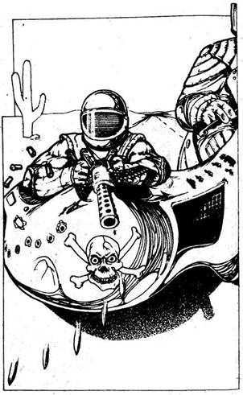
13.
A visszapillantóban látod, hogy az oldalkocsis motor felzárkózott mögéd. Az utas előtt egy géppuska van az oldalkocsira szerelve. Az utas a repülés hőskorának pilótáira emlékeztet szemüvegével és bőrsisakjával. Mindkét motoros fekete sálat visel szája előtt a szélben kavargó homok ellen. Hamar kiderül, miben sántikálnak. Géppuskasorozatot eresztenek meg az Interceptor után, és 1 Páncélzat pontot veszítesz. Mit teszel?
Egy adag vasszöget szórsz magad mögé (ha
van vasszöged)? Lapozz a 127-re.
Olajat fecskendezel magad mögé (ha van egy
teli kanna olajad)? Lapozz a 361-re.
Az Interceptor géppuskájával viszonzod a
tüzet? Lapozz a 282-re.
14.
Az ágy nagyon kényelmes, s csak jóval napkelte után ébredsz. Nyugodt és friss vagy az éjszakai pihenő után. 3 Életerő pontot nyersz. Leszaladsz a lépcsőn, és kilépsz az ajtón, de hirtelen megtorpansz. Egy fehér ruhás férfi épp egy kanna benzint locsol az Interceptorra, majd motyogva hátralép, egy doboz gyufát húz elő. Ha rákiáltasz lapozz a 260-ra. Ha inkább odarohansz hozzá, hogy kiüsd a gyufát a kezéből, lapozz a 217-re.
15.
A férfihoz lépsz, és megszólítod. Nyugodtan kikapcsolja a hegesztőpisztolyt. - Nem ilyen rohadt sivatagi melegbe való munka ez - mondja. - De hát így békén hagynak. Nem állok senki pártjára, megjavítom bárki kocsiját. Ha azt akarja, hogy javítsam meg a magáét is, 200 hitelbe kerül. - Ha meg tudod fizetni az árat és meg is akarod javíttatni a kocsidat, lapozz a 169-re. Ha elutasítod az ajánlatot és továbbmész kelet felé, lapozz a 259-re.
16.
Kora reggel kipihenten, felfrissülve ébredsz.
2 Életerő pontot nyersz. Ha át akarod kutatni a kávézót, lapozz a 26-ra. Ha inkább rögtön útnak indulsz, lapozz a 254-re.
17.
Keményen a gázra lépsz, hogy elhúzz a motorosoktól, mielőtt a robbanás darabokra tépné a kocsidat. Az Interceptor megcsúszik, ahogy a kerekek kipörögnek a poros úton. Elzúgsz az útlezárás mellett, és jó száz métert megteszel, amikor az akna felrobban. Mindössze egy tompa puffanást hallasz, de a kocsi szinte kormányozhatatlanul csapódik az út egyik oldaláról a másikra. 2 Páncélzat pontot veszítesz. Sikerül megállnod, és kipattansz. Látod, hogy nem lehet megjavítani a kereket, és föl kell tenned a tartalékot. Lejjebb az úton a motorosok támadásra készen indulnak feléd páncélozott motorjukon. Visszaülsz, hogy az Interceptor gépfegyvereivel fogad őket.
Páncélmotor TŰZERŐ 6 PÁNCÉLZAT 9
A Tűzerődet 2-vel csökkenti ebben a harcban a lerobbant autód. Ha győzöl, lapozz a 103-ra.
18.
Hiába kiáltasz a polgárokra, hogy harcoljanak. Megtört emberek, s szinte ellenállás nélkül adják meg magukat. Rá kell jönnöd, hogy küldetésed kudarcba fulladt. A Pusztulás Kutyái bosszút álltak.
19.
Gyorsan kereket cserélsz, és hamarosan úton vagy kelet felé. Lapozz a 119-re.
20.
A Ford hirtelen balra húzódik, hogy onnan előzzön, de számítottál erre a manőverre, és sikerül megakadályoznod. 1 szerencse pontot nyersz. Továbbra is vezetsz, és te haladsz át a célvonalon. Az Interceptor jó fél kocsihosszat rávert a Fordra. Megnyerted a Blitz-versenyt. Lapozz a 111-re.
21.
Amennyire tudod rendbe hozod a kocsidat. Fél órádba kerül kitisztítani a gyertyákat, ellenőrizni az olajat, beállítani a porlasztót, és meggyőződni arról, hogy semmi lényeges nem károsodott. Észreveszed, hogy az egyik hátsó keréknél három csavar elég laza, s újra meghúzod őket. 2 Páncélzat pontot nyersz. Amikor megbizonyosodsz arról, hogy minden úgy működik, ahogyan kell, továbbindulsz dél felé. Lapozz a 221-re.
22.
Egy útjelző tábla mellett száguldasz el, amely szerint egy délnek vezető leágazás van előtted. Ha délnek fordulsz, lapozz a 311-re. Ha továbbhajtasz kelet felé, lapozz a 203-ra.
23.
Közeledsz a vasúti híd felé, amely alatt az út vezet, de nem látod a nevető férfit a tetején. Aztán megpillantod, egy kőpillér van a párkány szélén, s ő tartja, hogy az le ne essen. Amikor észrevesz, gyerekesen kuncog, elengedi a pillért, s az Interceptor előtt zuhan rá az útra. Dobj két kockával. Ha a kapott összeg annyi, vagy kevesebb, mint ügyesség pontszámod, lapozz a 137-re. Ha az összeg nagyobb ügyesség pontszámodnál, lapozz a 342-re.

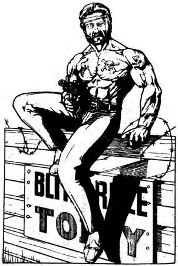
24.
Hepehupás úton haladsz egy szögesdróttal fedett fakapuig, amelynek tetején egy agyontetovált, meztelen felsőtestű férfi ül, géppisztollyal a kezében. Mogorva hangon szólít meg. - Nem ismerlek. Melyik bandához tartozol? - A Fekete Patkányokhoz - felelsz egy hirtelen ötlettel. - Soha nem hallottam róluk - mondja a férfi. - Mindegy, mindenkivel kiállunk. Menj tovább az úton a kiégett házig, ott meglátod a többi kocsit, már leparkoltak. Az első verseny öt perc múlva kezdődik, és elég komoly tétek vannak. Jó kis szórakozás lesz. - Ha behajtasz a kapun, lapozz a 300-ra. Ha inkább gyorsan hátrálni kezdesz és visszamész a főútra, dél felé, lapozz az 59-re.
25.
A robbanástól elveszted az eszméletedet. Lapozz a 100-ra.
26.
Benyomod a kávézó hátsó ajtaját, és látod, hogy a helyiséget kifosztották. A padlót törött cserepek borítják, a bútorok szanaszét dobálva, a szekrények üresek. Lépcső vezet a fenti lakószobákhoz, de ott ugyanez a kép fogad. Mivel semmit nem találsz, ami érdekelne, kimész, de hirtelen megtorpansz egy fehér ruhás férfi láttán. Benzint locsol az Interceptorra, majd motyogva hátralép, gyufát húz elő, és meggyújt egy szálat. Ha rákiáltasz, lapozz a 260-ra. Ha inkább odarohansz, hogy kiüsd a gyufát a kezéből, lapozz a 217-re.
27.
Keményen a fékbe taposol, és szinte rögtön megállsz. A Ford kikerül, majd gyorsan eltávolodik tőled. Mivel nem használhatod előre tüzelő fegyvereidet, úgy döntesz, hogy öklelni próbálod a Fordot. Lapozz a 139-re.
28.
Peter udvarához hajtasz, és a műhelybe állítod az Interceptort. Peter gyorsan átvizsgálja a motort, és azt mondja, hogy csak úgy tud a gyorsulásán javítani, ha beépít egy szuperbefecskendezőt. Ez pedig 100 hitelbe és némi gyógyszeredbe kerül. Ha akarsz és tudsz Peternek 100 hitelt adni, és két gyógyszercsomagot a mentőládádból, lapozz a 141-re. Ha vissza akarod, vagy vissza kell utasítanod az ajánlatát és tovább hajtasz dél felé, lapozz a 88-ra.
29.
Az egyik eltévedt golyó vállon talál. Dobj egy kockával, és az eredményt vond le életerő pontjaidból. Elgondolkodsz, vajon meddig fog kitartani a gyógyszerkészleted, ha vállalkozásod továbbra is ilyen veszélyes lesz. Amikor végre ellátod magad, visszabicegsz az Interceptorhoz, és keletnek tépsz. Lapozz a 22-re.

30.
A nyílvessző vállon talál, és lecsúszol a létráról. Dobj egy kockával, és az összeget vond le életerő pontjaidból. Ha életben maradsz, akkor fájdalmaddal nem törődve felrohansz a létrán, mielőtt az útonállónak ideje lenne újra meghúzni a nyílpuskáját. Sebesülésed megakadályoz abban, hogy használd a revolveredet, így hát rárontasz az ellenségre, hogy puszta kézzel bánj el vele. Dobj egy kockával, az eredményt add hozzá ügyesség pontjaidhoz, s az összegből vonj le egyet sebesülésed miatt. Ezután dobj újra egy kockával, és az eredményt add hozzá az Útonálló 7 ügyesség pontjához. Ha pontjaid száma annyi, vagy nagyobb, mint az övé, lapozz a 74-re. Ha kisebb, akkor lapozz a 226-ra.

31.
A farmház könnyű célpont, másodpercek alatt betáplálod a komputerbe, és megnyomod a gombot, tüzelsz. A rakéta célba talál. A robbanás lerombolja a farmot, tégla és fadarabok repülnek szanaszét. Rögtön fogod az U-Fix ragasztóval teli kannát, és kijavítod a kocsidon keletkezett lyukat.
Majd mikor a por végre leszáll, óvatosan, ujjad a géppuska ravaszán tartva elindulsz. Megállsz a kiégett farmház mellett, de életnek nem látod jelét. Leállítod a motort, és letekered az ablakot. Így hallod meg, hogy valaki kétségbeesetten kiált segítség után. Ha kiszállsz a kocsiból, hogy segíts, lapozz a 262-re. Ha inkább távozol a városból, és továbbhajtasz dél felé, lapozz a 353-ra.

32.
Minden felszerelésedet két hátizsákba pakolva elindultok a Pusztulás Kutyáinak tábora felé. Telihold van, könnyen tájékozódtok a sivatagban. Iránytűd segítségével folyamatosan keletnek haladsz. Egy óra múlva tűz fényét látjátok a messzeségben egy kis emelkedőn. Amber suttogva magyarázza, hogy a Pusztulás Kutyái sátrakban élnek egy alacsony, lapos hegytetőn, és ott parkolnak
kocsijaik is. Amikor a hegyhez érsz, látod, hogy az emelkedő nem veszélyes, egykettőre fönn is vagytok. Hasra feküdve figyelitek a táborban zajló mozgást. A banda a tábortűz körül ül, isznak, nevetgélnek. Két őr, mindkettő puskával felfegyverkezve, lassan járőrözik a tábor körül. Úgy döntesz, hogy körbekúszol a hegy oldalán a szögesdrót kerítéshez, és megteszed amit elterveztél. Az egyik őr közvetlen fölötted megy el, és egészen belelapulsz a hegyoldalba, hogy ne vegyen észre, de Amber véletlenül megrúg egy kis követ, s az néhány métert gurul lefelé a hegyről. A sivatagi éjszaka csendjében ez iszonyú hangosnak tűnik. Tedd próbára szerencséd! Ha szerencséd van, lapozz a 76-ra. Ha nincs, lapozz a 160-ra.

33.
Soká tart, míg kiásod kocsidat az árokból, és meglehetősen elfáradsz. 1 életerő pontot veszítesz. Amikor végre kiszabadítod autódat, délnek hajtasz vele, elhaladva a páncélkocsi kiégett roncsa mellett. Lapozz a 47-re.
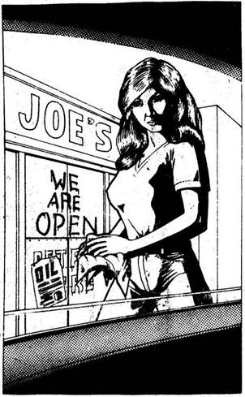
34.
Hamarosan kiérsz a városból. Roncs kocsikat és kidőlt fákat kerülgetsz az úton, amely távolabb a dél felé vezető autópályába csatlakozik. Kis üzemanyagtöltő állomás van az elágazásnál; Joe Garázsa a cégtábla szerint. Megállsz, amikor meglátod, milyen kocsi áll a parkolóban. Felspécizett veteránautó, tisztán, láthatóan jó állapotban. Farmerba és pólóba öltözött fiatal lány jön ki az irodából, és rád mosolyog. - Helló, segíthetek? - Ha szóba állsz vele, lapozz a 302-re. Ha továbbmész és felhajtasz az autópályára, lapozz a 167-re.
35.
Az idegek harca dúl közted és a Ford vezetője között. A két kocsi fej fej mellett száguld a híd felé, s egyikőtök sem enged. Dobj egy kockával, és a számot add ügyesség pontjaidhoz. Dobj újra egy kockával, és a számot add a Ford vezetőjének 8 ügyesség pontjához. Ha a te összeged akkora, vagy nagyobb, mint ellenfeledé, lapozz a 379-re. Ha viszont kisebb, lapozz az 51-re.
36.
A tőr fájdalmasan beléd fúródik. Dobj egy kockával, és az eredményt vond le életerő pontjaidból. Ha életben maradsz, lapozz a 368-ra.
37.
Hatalmas szikladarab zuhan az Interceptor tetejére. Dobj két kockával, és az összeget vond le páncélzatodból. Ha túléled a dolgot, lapozz a 261-re.
38.
Kiveszed a mentőládádból az egyik gyógyszercsomagot, és gyorsan kitisztítod a sebet. Kiveszed a golyót. és egy réteg műanyag bőrrel feded sérülésedet, majd bekötözöd. Felállsz, és be akarsz pattanni az Interceptorba, amikor egy hatalmas, vad kutya tűnik föl az utca végén. Bundája rongyos a sok verekedéstől, nyitott szájából nyál csöpög. Valószínűleg veszett. Lehajol, aztán hirtelen, morogva feléd rohan. Ha megpróbálod lelőni, lapozz a 176-ra. Ha inkább késsel küzdesz meg vele, lapozz a 374-re.
39.
Reflexed sebesülésed ellenére gyors. Késedet egyetlen fürge mozdulattal előhúzod tokjából, és a vigyorgó férfiba vágod. Az döbbent arccal térdre hull, és megragadja a hasából kiálló kés markolatát. Majd előrezuhan, de még haldokolva vad tüzelésbe kezd. Tedd próbára szerencséd! Ha szerencséd van, lapozz a 171-re. Ha nincs, lapozz a 29-re.
40.
Mire a tartálykocsihoz érsz, a Pusztulás Kutyája már elindította a motort. Felugrasz, és megragadod a kilincset, miközben a fickó pisztolyért nyúl. 6 ügyesség pontja van. Ha ügyesség pontszámod több vagy ugyanannyi, lapozz a 81-re. Ha ügyességed nem éri el a hatot, lapozz a 296-ra.
41.
A páncélkocsi vezetője résen van, és félrerántja járműve kormányát, hogy kikerülje a szögeket. Utat tör az óriásira nőtt fűben, majd visszazötykölődve az útra, folytatja az üldözést. Ha olajréteget akarsz locsolni az útra, lapozz a 165-re. Ha megkockáztatod, hogy egy kézifékes kanyarral szembefordulj vele, lapozz a 77-re.
42.
Sötétség száll a tájra, és bekapcsolod fényszóróidat. Egyenletesen haladsz, kikerülve az akadályokat s a vadállatokat, melyeknek vörös szeme meg-megvillan reflektorod fényében. Elfáradsz mire éjszaka lesz. Dobj két kockával. Ha az összeg annyi, vagy kevesebb, mint ügyességed, lapozz a 161-re. Ha nagyobb, lapozz a 186-ra.
43.
Mélyet lélegzel, amikor az Interceptor áthalad a gránát fölött. Tedd próbára szerencséd! Ha szerencséd van, lapozz a 175-re. Ha nincs szerencséd, lapozz a 201-re.
44.
- Hazudsz! Rögtön láttam, hogy nem úgy nézel ki, mint aki valamelyik bandához tartozik. Halljuk, mit mondanak a többiek - mondja a férfi, és a fák alatt pihenő barátai felé int géppuskával. Ha van bokszered, lapozz a 273-ra. Ha nincs, lapozz a 214-re.

45.
Nyílt úton száguldasz, és nem veszed észre a vasszögeket, amelyeket útonállók szórtak az útra. Pont rájuk hajtasz, és csak akkor kapsz észbe, amikor egy durrdefekttől alig bírod tartani a kormányt. Tedd próbára szerencséd! Ha szerencséd van, lapozz a 304-re. Ha nincs, lapozz a 60-ra.
46.
Egymás után teszed meg a kilométereket, és közben a benzinóra mutatója egyre süllyed, míg végül üres tankot jelez. Ha van egy teli tartályod az Interceptorban, lapozz a 310-re. Ha nem sikerült benzinre szert tenned, lapozz a 364-re.

47.
Egyre melegebb lesz, ahogy a nap emelkedik, és minél délebbre haladsz, annál inkább látod a változást a növényzetben is. A dús mezőket kopár cserjék váltják fel, nemsokára sivatagon kell áthajtanod. Néhány kilométerrel lejjebb nagy útelágazáshoz érsz. Ha jobbra akarsz fordulni nyugat felé, lapozz a 117-re. Ha inkább továbbhaladsz délnek, lapozz a 23-ra.

48.
Késed keményen megmarkolva lekuporodsz, s várod a támadást. Az orgyilkos végül hirtelen üvöltéssel rád veti magát.
Orgyilkos ÜGYESSÉG 7 ÉLETERŐ 10
A Kézitusa szabálya szerint harcolod végig a küzdelmet. Késed és az Orgyilkos feszítővasa egyaránt 2 Életerő pont levonását eredményezi, ha valamelyikőtök talál. Ha győzöl, lapozz a 138-ra. Ha elveszíted az eszméleted, lapozz a 100-ra.
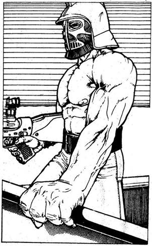
49.
Furcsa kinézetű jármű parkol előtted az úton. Mintha egy kis teherautót úgy alakítottak volna át, hogy egy görög harci szekérre emlékeztessen, még vágóélek is vannak a kerekeihez szerelve. Erőteljes, félmeztelen férfi áll a platón, fejét gladiátorsisak fedi, kezében dupla csövű géppisztoly van. Int a vezetőnek, hogy induljon feléd. Nincs más választásod, mint megküzdeni ezzel a modern gladiátorral.
Harci szekér TŰZERŐ 9 PÁNCÉLZAT 15
Ha győzöl ebben az Autós Csatában, lapozz a 91-re.
50.
Ráveted magad a férfira, a földre rántod, de nem tudod megakadályozni, hogy a gyufát a kocsidra dobja. Az Interceptor azonnal lángokba borul. Hasztalan dühöngsz, az őrölt férfi véget vetett küldetésednek.
51.
Mikor már csak néhány méterre vagytok a hídtól, idegeid felmondják a szolgálatot. Keményen fékezel, és hagyod, hogy a Ford előtted száguldjon fel a hídra. A gázra lépsz, s megpróbálod utolérni, de már előttetek a célvonal, mindössze kétszáz méter, és rájössz, hogy elvesztetted a versenyt. A Ford egy kocsihosszal nyer az Interceptor előtt, s ezzel 1 szerencse pontot vesztesz. Lapozz a 232-re.
52.
Gyorstüzelő géppuskád nem téveszti el a célt, a motor lerepül az útról, és egy fának csapódik. De a vezetőjének még van annyi ideje, hogy nyílpuskájával kilője az első kerekedet. A benzinszállító ijesztően csúszkál. Kétségbeesetten birkózol a kormánykerékkel, hogy nagy nehezen az úton tartva megállítsd a járművet. Ezután a kabinból figyeled, mit tesz a másik motoros. A benzinszállító mögé áll, és onnan kiabál, hogy hagyd el a kabint. Néhány szóval válaszolsz csupán, de ezek nem hagynak kétséget afelől, mit tartasz a javaslatáról. - És mit szólnál egy párbajhoz, he? - kiált a másik. - Minden a győztesé. - Ha elfogadod a javaslatot, lapozz a 164-re. Ha inkább a kabinban maradsz, lapozz a 190-re.

53.
A gázra lépsz, és támadóid felé kormányozod az Interceptort. De mielőtt elüthetnéd őket, felugranak a motorjaikra, és elszáguldanak. Ha üldözőbe akarod venni őket, lapozz a 78-ra. Ha inkább visszahajtasz az útra és jobbra fordulsz kelet felé, lapozz a 45-re.
54.
Nem állsz meg ünnepelni győzelmedet, hátha Leonardi rossz vesztő. Nem próbál követni, és lassan elmarad mögötted. Egy pótkocsis teherautó mellett mész el, amely látszólag csak rövid ideje parkol itt. Ha megállsz, hogy megvizsgáld, lapozz a 104-re. Ha inkább megállás nélkül tovább mész, lapozz a 118-ra.
55.
Benyitsz a kávézó hátsó ajtaján, és rögtön látod, hogy a helyiséget kirabolták. Törött porcelán borítja a padlót, a bútorok összevissza hajigálva, a szekrények üresek. Egy lépcső vezet föl a lakóhelyiségekbe, amelyekben hasonló kép fogad. Miután semmi érdekeset nem találsz, leülsz, és saját, gyorsan fogyó elemózsiádból eszel valamennyit. Amikor teljesen besötétedik, revolveredet a párna alá téve lefekszel az ágyra. Dobj egy kockával. Ha 1, 2 vagy 3-at dobsz, lapozz a 110-re. Ha 4, 5 vagy 6-ot, lapozz a 14-re.
56.
Felhúzod a bokszert az ujjaidra, és olyan csöndesen ugrasz föl, amennyire csak lehet. A félhomályban látod az őr arcát, miközben lesújtasz rá. Azonnal elájul az ütéstől. Elkapod, miközben összeesik, remélve, hogy barátai nem vették észre, mi történt. Saját övével összekötözöd, és otthagyod a hegyoldalban. Hamarosan keresni kezdik, így aztán gyorsan kúszol felfelé a hegyre a kerítéshez. Lapozz a 198-ra.
57.
Hihetetlen sebességgel előrántod revolveredet, és a férfire irányítod, mielőtt az mozdulni tudna. Utasítod, hogy dobja el puskáját. Aztán elmagyarázod neki, hogy nem te ölted meg a feleségét és a fiát, és csak hazudtad, hogy országúti harcos vagy, mert Új Remény hollétét titokban akarod tartani. - Új remény, ezt mondtad? - kérdi izgatottan a férfi. - Pontosan oda tartok. Azóta kerekezek, amióta rajtunk ütöttek. Itt is csak azért álltam meg, hogy élelmiszert szerezzek a boltból. de néhány megvadult kutya megtámadott. Egyet lelőttem, a többi elszaladt. Johnsonnak hívnak, és sajnálom, hogy ilyen gorombán viselkedtem veled, de hát manapság senkiben sem bízhat meg az ember. - Mosolyogva kezet ráztok, és megtudod, hogy Johnson építész. Megkérdi, messze van-e még Új Remény, és hogy vajon beengedik-e oda. Közlöd, hogy mindössze tizenöt kilométernyire, és jó esélyei vannak, mert a városnak szüksége van ügyes emberekre. Azt is elmondod, mi járatban vagy, s ő figyelmeztet, hogy meg ne állj Joe Garázsánál, mely a várostól nyolc kilométerre fekszik. - Nincs benzinjük, és mindenkit kirabolnak, aki megáll ott. - Megköszönöd a tanácsot, sok szerencsét kívánsz Johnsonnak, és visszamész az Interceptorhoz. Elfordítod az indítókulcsot, s a motor élesen felbúg. Ismét útnak indulsz. Lapozz a 34-re.
58.
Fölmész a lakókocsi lépcsőjén, s gyorsan átkutatod a szekrényeket. Egy marhahúskonzervet és egy kézigránátot találsz. Zsebre vágod a gránátot, és úgy döntesz, hogy most rögtön megeszed a marhahúst, mert nagyon éhes vagy. 2 Életerő pontot nyersz. Mivel valószínűtlen, hogy újra találkozzál támadóiddal, visszamész az Interceptorhoz, és elindulsz dél felé. Lapozz a 150-re.
59.
Amint elhajtasz, hallod, hogy a férfi felkiált. - Beszari. - A visszapillantó tükörben látod, hogy benyúl a kapuról lógó bőrtáskába, s egy kézigránátot húz elő. Kibiztosítja és az Interceptor felé hajítja a gránátot. Tedd próbára szerencséd! Ha szerencséd van, lapozz a 73-ra. Ha nincs, lapozz a 121-re.

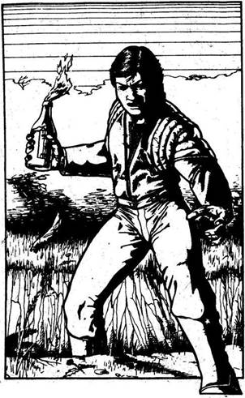
60.
Mindkét hátsó kereked kidurrant, s farolva megállsz. Egy férfi ugrik elő hirtelen az út menti bozótból. Kezében egy palack, mely egy lángoló ronggyal van bedugaszolva. Rémülten kapcsolsz: benzinbomba. De tehetetlen vagy, s a férfi lerobbant kocsidhoz vágja a palackot. Dobj két kockával, és az összeget vond ki az Interceptor Páncélzatából. Ha túlélted a robbantást, lapozz a 135-re.
61.
Az út keletnek vezet, és nyugodtan haladsz rajta, mígnem egy újabb útelágazáshoz érsz. Ott megállsz. Itt kell jobbra fordulnod, a dél felé tartó San Angló-i útra. Lapozz a 272-re.
62.
Sikerül úrrá lenned a száguldó Interceptoron, és kikerülöd a felborult teherautót. Lapozz a 151-re.
63.
A tartály kinyílik, és teleszórja vasszögekkel az utat. De a Ford alvázára erős légfúvó van szerelve, s ez egy kivételével az összes szöget lesepri az útról. Mindössze egy kis lyuk keletkezik az egyik vastag kerekén, amely csak annyira lassítja le, hogy kimenekülsz gránátvetője hatósugarából. Közben eléred a fehér házat, ahol fordulnod kell. A fékre taposol, és hirtelen balra rántod a kormányt. Pár métert hátramész a felkavart porban, aztán újra egyenesbe vágod a sebességváltót, és kilősz visszafelé a célvonal felé. A Ford élesen megfordul utánad, s máris újra mögötted halad, majd melléd
ér. Amikor egy vonalban vagytok, vezetője feléd rántja a kormányt, hogy nekiütődjön kocsija az Interceptornak. Úgy akar pontot tenni párharcotok végére, hogy lesöpri kocsidat az útról.
Sárga Ford TŰZERŐ 8 PÁNCÉLZAT 16
Egy sikeres öklelés 2 ponttal csökkenti egy kocsi Páncélzatát. Ha négy fordulót túlélsz, lapozz a 334-re.
64.
Átkutatod a bandita ruháját, de semmi hasznosat nem találsz. Ezután az Interceptor kerekeit veszed szemügyre, hogy meg lehet-e javítani őket. Tedd próbára szerencséd! Ha szerencséd van, lapozz a 242-re. Ha nincs szerencséd, lapozz a 313-ra.
65.
Éles fájdalmat érzel karodon, ahogy az egyik golyó eltalálja. Szerencsére csak felületi a seb, mindössze 2 életerő pontot veszítesz. Az Interceptor elsőre indul, és csikorgó kerékkel tűz el a mellékúton a főút felé, amelyen jobbra fordulva dél felé száguldasz. Lapozz a 207-re.
66.
Az út egyenesen nyugatnak tart, és jól haladsz, mert viszonylag kevés akadályt kell kikerülnöd. Ám nem tart sokáig gyors utazásod. Az út egy folyóhoz ér, amelyen felvonóhíd vezet át, de az nincs teljesen leeresztve. Úgy gondolod, hogyha úgy 180 kilométeres sebességgel hajtasz föl rá, a lendület átvissz a túloldalra, de ebben nem vagy egészen biztos. Ha azért megpróbálod, lapozz a 270-re. Ha inkább megfordulsz és keletnek mész, lapozz a 159-re.
67.
Mint két bajvívó lovag támadtok egymásra, villogó géppuskával felszerelt járművetekkel elzúgtok egymás mellett, majd megfordulva ismét egymásra támadtok. De a furgon hirtelen oldalt kanyarodik, hogy nekivágódjon az Interceptornak. Elrántod a kormányt, hogy kikerüld. Dobj két kockával. Ha az összeg akkora, vagy kisebb, mint ügyességed, lapozz a 200-ra. Ha nagyobb, mint ügyességed, lapozz a 248-ra.
68.
Nagyon kell vigyáznod, hogy sikerüljön kikerülnöd minden akadályt az úton. De ahogy a nap első sugarai megjelennek a láthatáron, fáradtságod eltűnik, és megújult erővel vezetsz tovább San Anglo felé. Lapozz a 254-re.
69.
Legyőzted a Pusztulás Kutyáit, és egy rövid időre megpihenhetsz. Mire sikerül kiszabadítanod az Interceptort a furgonból, a nap fölkel, és meleg, vörös fényben fürdesz. Hirtelen úgy érzed, hogy sikerrel jársz majd, és jókedvűen, további késedelem nélkül elindulsz dél felé. Lapozz a 90-re.
70.
A kerekek lecsapódnak a híd túloldalán, és teljes erővel kell tartanod a kormányt, hogy az Interceptor egyenesen haladjon. Átjutottál a hídon, de egy felborult teherautó felé száguldasz. Dobj két kockával. Ha az összeg akkora, vagy kisebb, mint ügyesség pontjaid száma, lapozz a 62-re. Ha nagyobb, lapozz a 133-ra.
71.
Tövig nyomod a gázt, amikor a kövek és sziklák az útra zúdulnak. Tedd próbára szerencséd! Ha szerencséd van, lapozz a 172-re. Ha nincs, lapozz a 37-re.
72.
Amikor az ajtót kinyitod, az megránt egy zsinórt, s így meghúzza a túloldali falon lévő nyílpuska ravaszát. A nyíl kipattan, és a válladba fúródik. Dobj egy kockával, és az eredményt vond le életerődből. Ha életben maradsz, lapozz a 233-ra.

73.
Kilősz a kocsiddal, és sikerül megmenekülnöd a gránát robbanása elől. Ha még mindig vissza akarsz hajtani a főútra, hogy ott délnek fordulj, lapozz a 207-re. Ha ezek után inkább elfogadod a kihívást, és részt veszel a Blitz-versenyen, lapozz a 330-ra.
74.
Támadód képzett birkózó, mégis sikerül két vállra fektetned, s lelöknöd a vontató tetejéről. Súlyos puffanással zuhan a földre, s azonnal elveszti eszméletét. Te megragadod a lehetőséged, elhajtasz, s egész nap olyan tempóban haladsz, amilyen gyorsaságra a benzinszállító csak képes. Egy váratlan rajtaütési kísérlettől eltekintve, amelyet könnyűszerrel kivédesz, a páncélozott tartálykocsiddal incidensek nélkül utazol. Már csaknem leszáll a nap, amikor eléred Új remény határát, annak magasról őrzött előfalait. Elszoktál tőle, mégis csodálatos látvány. Ha megúsztad harapás nélkül, lapozz a 380-ra.
75.
Mihelyt felengeded a kuplungot, hangos durranást hallasz. Az egyik kereked kidurrant. Káromkodva kiszállsz a kocsiból. A lány egy kis aknát tett az első kereked alá, amíg verekedtél. 1 Szerencse pontot veszítettél. Levonod a tanulságot, hogy a jövőben nem kell olyan könnyelműen szóba állni idegenekkel, és elindulsz az autópálya felé. Lapozz a 167-re.
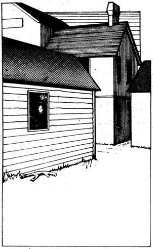
76.
Az őr ügyet sem vet a guruló kavics hangjára, a viccekre figyel, amelyeket barátai a tűz mellett mesélnek. Elmegy melletted, s tovább kúszhatsz a kerítés felé. Lapozz a 198-ra.
77.
Élesen balra rántod a kormányt, és ugyanakkor berántod a kéziféket. A kocsi fara jobbra perdül, és rögtön a gázra kell lépned, hogy megállítsd a csúszást. Dobj két kockával. Ha az összeg akkora, vagy kisebb, mint szerencséd, lapozz a 290-re. Ha az összeg nagyobb, lapozz a 352-re.
78.
A motorosok jobban haladnak autódnál a rögös mellékúton, nem tudod behozni őket. A távolban egy kisebb települést látsz, nyilván ez Sziklaváros. A házak között a motorosok eltűnnek szem elől. Ahogy közelebb érsz, fegyverropogást hallasz. Mintha a legközelebbi farmházból jönne. Mit teszel?
Kilősz egy rakétát a farmházra? Lapozz a 199-re.
Továbbmész a házak felé? Lapozz a 377-re.
Megfordulsz, visszahajtasz a főútra, és ott
továbbmész kelet felé? Lapozz a 45-re.
79.
Motorod jár, és úgy hallod, nem esett baja. Ha meg akarsz állni, hogy elbánj a támadóddal, lapozz a 281-re. Ha inkább tovább mész délnek, lapozz a 150-re.
80.
A Ford hirtelen jobbra lendül, míg te elszámítván magad, balra fordulsz. A Ford elhúz melletted, és egy fél kocsihosszal az Interceptor előtt ér célba. 1 szerencse pontot vesztesz. Lapozz a 232-re.
81.
Gyorsabban reagálsz, mint a sivatagi fosztogató. Feltéped az ajtót, és kirántod a fickót a vezetőülésből. Hamar elbánsz vele, s utasítod, szóljon a barátainak, hogy fújják le a támadást. Vonakodva beleegyezik, és a lövöldözés szinte rögtön abbamarad. Fegyvereddel továbbra is sakkban tartod túszodat, míg a Pusztulás Kutyái valamennyien visszavonulnak a sivatagba. Aztán hagyod, hogy ő is a barátai után menjen a San Angló-i olajfinomító lakóinak üdvrivalgása közepette. Segítesz nekik megjavítani a bejáratot, aztán közlöd, hogy ideje távoznod. Beülsz az óriási benzinszállítóba, és búcsút intesz. Szomorú elválnod hűséges Interceptorodtól, de tisztában vagy a vállalkozás jelentőségével. Két kocsi egész a sivatag határáig kísér észak felé. Ott visszafordulnak, s ismét egyedül vagy az országúton. Úgy döntesz, hogy egyenesen észak felé mész, kihagyva az ideúton megtett kitérőket. A nap eseménytelenül telik, és
már leszáll az este, amikor elfáradva beállsz egy motel parkolójába. Nem látsz fényt a motel ablakában. Ha a kabinban akarsz aludni, lapozz a 218-ra. Ha bemész a motelba, lapozz a 335-re.
82.
Dobj két kockával. Ha az összeg akkora, vagy kisebb, mint szerencséd, lapozz a 39-re. Ha nagyobb, lapozz a 244-re.
83.
Beugrasz az Interceptorba, és tüzet nyitsz a Légikalózokra.
Helikopter TŰZERŐ 8 PÁNCÉLZAT 11
Két ponttal csökken Tűzerőd ebben a küzdelemben kocsid mozdulatlansága miatt. Ha győzöl, lapozz a 305-re.
84.
Nem tudod, de a melléképületben lévő sötétség és meleg igen kedvező a vöröshátú pókoknak. Zavaros álmodban forgolódsz és csapkodsz, közben karod az egyik pókhoz ér. Az ösztönösen beléd mar, és mérget fecskendez ereidbe. Dobj egy kockával, és a számot vond le életerődből. Ha életben maradsz, lapozz a 258-ra.

85.
Gyorsan átvágod a drótot, és bemásztok a telepre. Amber járműtől járműig siet, s kis bombát tapaszt a motorblokkokra. Amikor végzett, int, hogy mehettek. Leosontok a hegyről, és amikor már látótávolságon kívül vagytok, futni kezdtek. Hirtelen meghalljátok a robbanásokat, de csak hetet számoltok. - Az egyik bomba gyújtószerkezete hibás lehet - lihegi Amber futás közben. Halljátok, hogy egy motor beindul, és hátranézve látjátok, hogy két fénykör távolodik az égő roncsok lángjaitól. A Pusztulás Kutyái vissza akarnak vágni támadóiknak. Ha életerőd jelenleg 10, vagy afölött van, lapozz a 107-re. Ha kevesebb 10-nél, lapozz a 326-ra.

86.
Félig kihúztad a revolveredet a tokból. amikor az idegen meghúzza a puska ravaszát. Füstfelhőt látsz, s ebben a pillanatban éles fájdalmat érzel a jobb combodban. A falnak ütődsz, és miközben lövés zaja visszhangzik füledben, lassan összecsuklasz. Dobj egy kockával, adjál 2-t a számhoz, és az összeget vond le életerődből. A férfi megfordul, és sorsodra hagy. Ha azonnal be akarod kötni a sebedet, lapozz a 38-ra. Ha inkább vissza akarsz mászni az autód biztonságába, lapozz a 256-ra.
87.
A férfi gyorsan reagál, és elugrik az ütés elől. Hirtelen géppisztolya csövével találod magad szembe, és már nem próbálkozol újabb ütéssel. Fordulj meg, mondja, aztán keményen tarkón vág fegyvere markolatával. Öntudatlanul zuhansz a földre. Lapozz a 100-ra.
88.
A zöld vegetáció hamarosan sivárabb vidéknek ad teret, kiszáradt cserjék díszítik a köves, barna talajt. A sivatag határához közeledsz, ahol az útba egy másik, kelet felé tartó út csatlakozik. Ha balra akarsz fordulni, lapozz a 177-re. Ha inkább tovább mész délnek, lapozz a 271-re.
89.
Úgy gondolod, túl veszélyes a város, hogy továbbra is itt maradj, és visszabicegsz az Interceptorba. Amikor végre ismét a kormánykerék mögött ülsz, önbizalmad visszatér. Lelépsz a kuplungról. és elszáguldasz. Lapozz a 34-re.
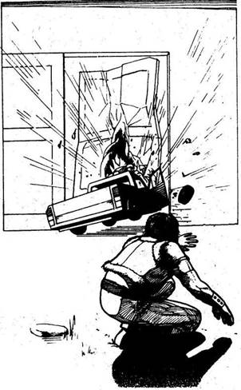
90.
Amber egyre izgatottabb lesz, amint átvágtok a sivatagon s megpillantjátok a messzi távolban San Anglo lángjait. Amikor közelebb értek, a lány kinyitja az ajtót, és int a kőkerítés tetején álló őröknek. Az acélajtó kinyílik, és behajthatsz. Az ottaniak lelkesen üdvözölnek. A nap további részét azzal töltöd, hogy a barbár külső vidéken megesett kalandjaidat meséled el. Hősként kezelnek, ellátják sebeidet, és a lehető legkényelmesebb házat bocsátják rendelkezésedre. Ezen az éjszakán jól alszol. 1 Ügyesség és 4 Életerő pontot nyersz. Reggel puskaropogásra ébredsz. Kirohansz, és megtudod, hogy a Pusztulás Kutyái nevű banda megtámadta a finomítót. Felmászol a falra, hogy lásd, mi történik odakint. Épp egy kis teherautó száguld az acélajtó felé, s látod, hogy a vezető az utolsó pillanatban kiugrik belőle. Majd hangos robbanás hallatszik, és az egyik ajtószárny kidől helyéről. A Pusztulás Kutyái autóikkal a motorjaikkal rögtön megindulnak a nyílás felé, s a védők pánikba esnek. Rájössz, hogy át kell venned a parancsnokságot. Dobj két kockával. Ha az összeg akkora, vagy kisebb, mint ügyességed, lapozz a 147-re. Ha nagyobb, lapozz a 18-ra.

91.
Olyan gyorsan haladsz dél felé, amilyen gyorsan csak tudsz, s közben rádiódat csavargatod, remélve, hogy sikerül kapcsolatot létesítened San Anglóval. Ám csak a légköri zörejeket hallod. Mégis bekapcsolva hagyod a rádiót, hátha téged hívnak. Jó tizenöt kilométer múlva újabb elágazáshoz érsz. Valaki egy táblát erősített ide. Motor és karosszériajavítások állj rajta durva kézírással, és egy nyíl, amely kelet felé mutat. Ha erre fordulsz, lapozz a 230-ra. Ha inkább továbbmész délnek, lapozz a 301-re.
92.
Hosszú ideig mész kelet felé, s mindössze egyetlen elágazást látsz, amely bal felé visz. Végül egy T alakú elágazáshoz érsz, ahol jobbra fordulhatsz. Ez az út visz délnek, San Anglo felé. Lapozz a 272-re.

93.
Megpróbálod újraindítani a lefulladt motort, hogy elhúzz, mielőtt a törvényenkívüliek odaérnének megnézni, mit zsákmányoltak. Tedd próbára szerencséd! Ha szerencséd van, lapozz a 268-ra. Ha nincs, lapozz a 178-ra.
94.
Épp hogy sikerül kikerülnöd a Jaguárt, aztán keményen beletaposol a gázba. A tükörben látod, hogy három kocsi vett űzőbe. Ha van egy doboz vasszöged vagy egy kanna olajad, lapozz a 328-ra. Ha nincs egyik sem, lapozz a 284-re.

95.
Mielőtt utolérhetnéd őket, megfordulnak, és egyenesen feléd hajtanak. A fényszóró fölé szerelt géppuskájuk vörösen izzva köpi magából a golyókat. Gázt adsz, és miközben feléjük száguldasz az Interceptorral, ujjaid a géppuska ravaszára kulcsolódnak.
Motorkerékpár TŰZERŐ 6 PÁNCÉLZAT 9
Ha győzöl, lapozz a 249-re.
96.
A kilométerek fogynak, s velük az üzemanyagod. A mutató hamarosan üres tankot mutat. Ha van nálad egy teli tartály tartalék benzin, lapozz a 180-ra. Ha nem tudtál üzemanyagot szerezni, lapozz a 354-re.
97.
Felállsz, és oda mész, ahol a két motoros fekszik összeroncsolt testtel a cserjék között. Egyiküknél egy dobókést találsz, s bőrcsizmádba rejted. Pihensz egy kicsit, amíg elég erősnek nem érzed magad, hogy folytasd az utat. Lapozz a 215-re.
98.
Megpukkadsz a méregtől, mert a tartály nem nyílik ki, és a Ford baj nélkül áthajt fölötte. Vezetője egy gránáttal válaszol, amely pont előtted csapódik be. Fojtott robbanást hallasz az alváz alatti acéllemez alól. Dobj két kockával, és az összeget vond le autód páncélzatából. Ha túléled a robbanást, lapozz a 294-re.
99.
Megállsz, és egy teli kanna tartalmát a kocsiba öntőd. Szemügyre veszed az Interceptort, elég siralmasan néz ki, és kétled, hogy kibírja az utat. Ha neki állsz egy kicsit helyre pofozni, lapozz a 21-re. Ha inkább tovább mész, lapozz a 221-re.
100.
Hamarosan felébredsz. A fejed úgy fáj, mint még soha. Aztán emlékszel az Interceptor. Felülsz és körülnézel, de hiába. A kocsi eltűnt, küldetésed kudarccal végződött.

101.
Csodával határos módon keresztülhajtasz az aknamezőn, anélkül, hogy egy aknát is felrobbantanál. 1 szerencse pontot nyersz. Még csak tudatában sem vagy, micsoda mázlid volt, miközben tovább utazol dél felé. Lapozz a 303-ra.
102.
Intesz Ambernek, hogy nyissa ki ajtaját, és a mögül lőjön a Pusztulás Kutyáira. Te is ezt teszed, és golyók tömege csapódik az ajtódba, amint kinyitod. Négy ellenfeletek tüzet nyitott. A kocsik mögött ti is, ők is jó fedezéket találtatok. Célba veszed a Pusztulás Kutyáinak két tagját, míg a másik kettőt Amberra hagyod.
Pusztulás Kutyái I. ÜGYESSÉG 7 ÉLETERŐ 13
Pusztulás Kutyái II. ÜGYESSÉG 8 ÉLETERŐ 14
A Pusztulás Kutyái külön-külön lőnek rád, s el kell döntened, te melyikükkel küzdesz meg először. A másik ellen a szokásos módon veted be Támadóerődet, de nem sebesíted meg, még akkor sem, ha Tűzerőd nagyobb, mint az övé. Vedd úgy, hogy
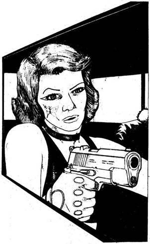
nem talált el. Természetesen ha az ő Támadóereje nagyobb, ő megsebesít téged. Ha győzöl, lapozz a 154-re, de vonjál le 1 pontot Ügyességedből mindig, ha több mint egyszer meglőttek a tűzharcban.

103.
Odamész az összetört motorhoz. Egyik kezedben revolver van, a másikban a mentőládád. A két motoros közül az egyik már halott, a másik is haldoklik. Messze rúgod a pisztolyt tőle, és megnézed, meg lehet-e még menteni. Kinyitja a szemét, és gonoszul elmosolyodik. - Dagi Jack és a fiúk még elkapnak ezért - hörgi, majd hátrahanyatlik. Mivel nem tudsz rajta segíteni, átvizsgálod a motort. Egy zárt csomagtartót találsz. Ha kinyitod a csomagtartót, lapozz a 206-ra. Ha késedelem nélkül kereket cserélsz az Interceptoron, lapozz a 346-ra.

104.
Semmi használhatót nem találsz a kabinban, és a kocsi is üres. Önkéntelenül is megnézed a tankot, van-e benn benzin, és meglepetten látod, hogy van. A tank vastag acélból van, és azon morfondírozol, hogyan tudnál hozzájutni az üzemanyaghoz. Ha van egy tekercs műanyagcsöved, lapozz a 306-ra. Ha nincs, lapozz a 187-re.

105.
Egy golyó fúródik az első kerekedbe, és a kocsi farolva megáll, pont a felrobbanó akna előtt. Dobj két kockával, és az összeget vond le autód páncélzatából. Ha túlélted a robbanást, lapozz a 292-re.
106.
Teszel egy kört az égő roncs körül, aztán délnek fordulva gázt adsz. Lapozz a 47-re.

107.
Úgy rohantok, mint a villám, közben többször is hátrapillantasz a hegyen köröző kocsira, amely a nyomotokat keresi. Már csak kétszáz méterre vagytok az Interceptortól, amikor megtalálják, és a kocsi űzőbe vesz. Dühödt hang visszhangzik a sivatagban, amint valaki egy hangszórón keresztül harsogja. Megállj nincs menekvés az Állat elől. Egyre hangosabban hallod a fenyegetést, ahogy a jármű közelebb ér. Végre odaértek az Interceptorhoz, és mindketten beugrotok, az utolsó pillanatban, amikor üldözőitek már-már elértek benneteket. Lapozz a 158-ra.
108.
Legnagyobb megkönnyebbülésedre a lövés talált, s a kutya azonnal felfordul. Lapozz a 89-re.
109.
A kocsi utasai mindent magukkal vittek, amikor kifogyva az üzemanyagból gyalog folytatták útjukat. Megpróbálod kinyitni a csomagtartót is, de zárva találod. Ha van feszítővasad, és fel akarod feszíteni vele a csomagtartót, lapozz a 277-re. Ha feladod, s a rendőrautóval nem törődve továbbmész dél felé, lapozz a 49-re.
110.
Kora reggel kipihenten, frissen ébredsz. 2 életerő pontot nyersz. Leszaladsz a lépcsőn, beugrasz az Interceptorba, és minden késedelem nélkül útnak indulsz dél felé. Lapozz a 254-re.
111.
A nézők köréd gyűlnek, hogy gratuláljanak. A Ford vezetője kiugrik az autóból, becsapja maga mögött az ajtót, és elrohan. - Úgy tűnik, rossz vesztes - mondja valaki -, igaz, ez az első eset, hogy kikapni láttam. - A lány, aki elindította a versenyt, átnyújtja a díjadat, egy kanna benzint, amit azonnal beteszel az Interceptorba. - Fél óra múlva kezdődik a következő futam - mondja. - Addig leülünk ott a fák alá. Van kedved velünk tartani? - Visszautasítod ajánlatát, mert szeretnél tovább haladni. Elmennek, s te átnézed az Interceptort, nincs-e valami komolyabb baja. Miközben a motor fölé hajolsz, érzed, hogy valaki megveregeti a vállad. Felnézel. A tetovált férfi az, aki a kapu tetején ült. - Mit is mondtál - kérdezi fenyegető hangon - melyik bandába tartozol? - Mit felelsz?
A Fekete Macskákéba? Lapozz a 44-re.
A Fekete Patkányokéba? Lapozz a 156-ra.
A Fekete Denevérekébe? Lapozz a 228-ra.

112.
A vegyesboltban találsz egy húskonzervet, s mohón befalod. Rég ettél ilyen jól, s 2 életerő pontot nyersz. Még fontosabb, hogy két teli kanna benzint
is találsz, s rögtön berakod az Interceptorba. Ha eddig nem tetted meg, átkutathatod a legközelebbi házat (lapozz a 252-re). Ha inkább továbbhajtasz délnek, lapozz a 353-ra.

113.
Gyorsan tüzelsz a közelgő járműre, s sikerül kilőnöd a fényszóróit. A sötétség biztonságában Amberral az Interceptor felé szaladtok. Közben hallod, ahogy a jármű utasai káromkodva próbálnak tartalék égőt keresni. Mire megtalálják, már felbukkan előttetek az Interceptor, aztán beugrotok a kocsiba, mielőtt üldözőitek elérnének benneteket. Lapozz a 158-ra.
114.
Továbbra is jókora utat teszel meg mellékutakon. Az út mindkét oldalán a gondozatlan földek teljesen elvadultak, s elgondolkodsz, vajon fognak-e még itt vetni valaha. Gondolataidba merülve elhagysz egy elágazást, de nem érdekel, mert nem akarsz észak felé haladni. Lapozz a 92-re.
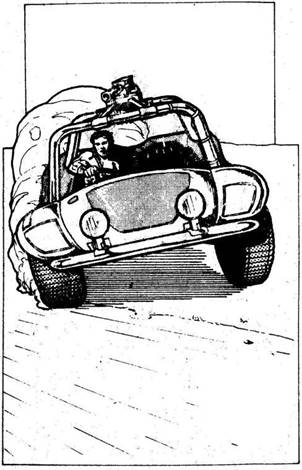
115.
Jó egy órát haladsz anélkül, hogy életnek jelét látnád, mígnem két porfelhőt pillantasz meg az út két oldalán. Feléd közelednek, s amint közelebb érnek, látod, két homokfutó az, s mindkettőn géppuska van. Mihelyt lőtávolságba kerülnek, rögtön tüzet nyitnak rád.
Első Homokfutó TŰZERŐ 7 PÁNCÉLZAT 10
Második Homokfutó TŰZERŐ 8 PÁNCÉLZAT 11
Ebben a harcban mindkét homokfutó külön tüzel rád minden fordulóban, s választanod kell, te melyikükkel küzdesz meg előbb. A másik ellen a szokásos módon veted be Támadóerődet, de nem rongálod meg, akkor sem, ha a te Támadóerőd nagyobb. Vedd úgy, hogy a golyója nem talált el. Természetesen ha az ő Támadóereje nagyobb, golyója kárt okoz az Interceptorban. Ha győzöl, lapozz a 194-re.

116.
A golyó a válladon talál. Dobj egy kockával, és vond le az eredményt Életerődből. Fájdalmad ellenére felülsz, és viszonzod a tüzet.
Útonálló ÜGYESSÉG 8 ÉLETERŐ 12
A Tűzharc szabályai szerint harcolod végig a küzdelmet, de a harc időtartamára vonj le 2 pontot Ügyességedből sebesülésed miatt. Ha győzöl, lapozz a 131-re, de vonj le Ügyességedből mindig 1 pontot, ha egynél többször eltaláltak.
117.
Úgy nyolcvan kilométer után egy útelágazáshoz érsz. Úgy döntesz, hogy bal felé indulsz, San Anglo irányába. Lapozz a 189-re.
118.
A kocsi nyeli a kilométereket, s benzinórád egyszer csak üreset mutat. Ha van teli kannád, lapozz a 99-re. Ha nincs tartalék üzemanyagod, lapozz a 364-re.
119.
Körülbelül fél óra elteltével egy főúthoz érsz, amely délnek vezet. Ráfordulsz, és remélve, hogy a nyílt úton jól haladhatsz, a gázra lépsz. Lapozz a 272-re.
120.
Lövésed nem talál, és a farkasok támadásba lendülnek. Csak annyi időd van, hogy kihúzd késed, s azzal védd magad.
Első Farkas ÜGYESSÉG 8 ÉLETERŐ 7
Második Farkas ÜGYESSÉG 8 ÉLETERŐ 8
A Kézitusa szabályai szerint egyenként küzdesz meg a farkasokkal. Késed és farkasok harapása egyaránt 2 Életerő pont levonását jelenti. Ha győzöl, lapozz a 286-ra.
121.
A gránát begurul az Interceptor alá, és felrobban. Dobj két kockával, és az összeget vond le a kocsi páncélzatából. Ha túléled a robbanást, lapozz a 134-re.
122.
Egyik motoros sem vette észre, hogy kiugrottál az Interceptorból. Megkerülöd őket, és sikerül mögéjük jutnod. Mulattat, amint a hátuk mögül figyeled őket, hogy üvöltöznek egymásnak, kutatva, merre lehetsz, hová lőjenek. Itt az idő, hogy felfedd előttük, hol vagy valójában. Figyelmeztető lövést eresztesz meg a levegőbe, és rájuk kiáltasz, hogy dobják el a fegyvert. Azonnal engedelmeskednek, elszállt az önbizalmuk, hogy így túljártál az eszükön. A motorhoz mész, és egy lezárt csomagtartót veszel észre rajta. Kinyittatod velük. Egy bilincset, egy térképet és 200 hitelt találsz benne. A motorjaikhoz bilincseled a fickókat, akik nyilván ahhoz a bandához tartoznak, amely megtámadta városodat. Majd megnézed a térképet. Új remény vörös körrel van rajta megjelölve, egy Sziklaváros nevű helység attól nem messze délkeletre pedig vörös kereszttel. Nem kétséges, hogy ez a motorosok ideiglenes otthona. Úgy döntesz, hogy otthagyod a motorosokat, a társaik majd csak megtalálják őket, és kicseréled az Interceptor megrongálódott kerekét. Lapozz a 346-ra.

123.
Túl gyorsan hajtasz ahhoz, hogy megperdülhess a Jaguár E-típus körül. Az Interceptor irányíthatatlanul csúszik, pörög, s végül felfordul. A biztonsági övben függve lábakat látsz a kocsid felé közeledni. Leonardi és barátai kirángatnak a kocsiból, megkötöznek, és otthagynak a vadállatok kényére-kedvére. Tehetetlenül nézed, ahogy lángra gyújtják a Interceptort, és tudod, hogy megbuktál, küldetésed itt véget ér.
124.
Hamarosan visszaérkezel az útelágazáshoz, és megállsz, hogy eldöntsd, merre menj. Ha jobbra akarsz menni, lapozz a 203-ra. Ha inkább balra fordulsz nyugat felé, lapozz a 344-re.
125.
Felpattansz, és az őrre veted magad. A sűrűsödő félhomályban alig látod megdöbbent arcát. Megragadtad a kezdeményezést, és jó esélyed van rá, hogy elnémítsd, mielőtt riadóztatná a többieket. Dobj két kockával. Ha az összeg akkora vagy kevesebb, mint Ügyességed, lapozz a 349-re. Ha nagyobb Ügyességednél, lapozz a 202-re.

126.
Keresztülrohansz az úton, és az épület oldalához lapulsz. Minden pillanatban várod, hogy újabb lövés dördüljön, és a szíved a torkodban dobog, miközben az épület sarkához lopódzol s körülnézel. Senkit nem látsz a keskeny utcán. Még egy lépést teszel előre, mikor egy férfihang rád kiált. - Oké. Eddig eljöttél. De még egy lépés, és keresztüllyukasztalak. Honnan jöttél? - Ha azt feleled, hogy Új Reményből, alapozz a 274-re. Ha inkább azt, hogy útonálló vagy, akinek nincs állandó lakóhelye, lapozz a 155-re.
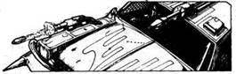
127.
Megnyomod a műszerfalon levő gombot, és a tükörben látod, hogy a tartály pattogva gurul mögötted az úton. Majd hirtelen kinyílik, és hegyes vasszögek szóródnak ki belőle az útra. Dobj egy kockával. Ha 1-4-ig dobsz, lapozz a 373-ra. Ha 5-öt vagy 6-ot dobsz, lapozz a 220-ra.
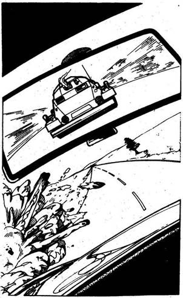
128.
Épp kezdenéd élvezni a nyílt országutat a kora reggeli fényben, amikor hirtelen közeledő járművet pillantasz meg a visszapillantó tükrödben. Egy páncélkocsi az, s ágyújának csövéből láng csap ki, ahogy egy aknát lő ki rád. A lövedék tőled balra robban fel, és megdobja a kocsit, de ügyesen mégis az úton tudod tartani. Mit teszel?
Vasszögeket szórsz? Lapozz a 312-re.
Olajat engedsz az útra? Lapozz a 165-re.
Egy gyors kézifékes fordulattal szembefordulsz
a páncélkocsival? Lapozz a 77-re.
129.
Hirtelen fülsiketítő robbanás hallatszik, és egy akna oldalt repíti az Interceptort. Dobj két kockával, és az összeget vond le az Interceptor páncélzatából. Ha túléled a robbanást, lapozz a 93-ra.
130.
Éppen egy éles kanyarba kormányozod az Interceptort, amikor hirtelen fenyegető morajlást hallasz magad elől. Kövek hullanak előtted az útra, és kisebb sziklák tömege zuhan utánuk. A keskeny szélvédőkön át nehéz felnézni a kanyon oldalára, de így is rájössz, hogy hegyomlás kezdődik. Ha keményen fékezel, abban reménykedve, hogy a sziklák és kövek előtted esnek majd le, lapozz a 314-re. Ha inkább gyorsítasz és úgy próbálsz megmenekülni. Lapozz a 71-re.
131.
Átkutatod a halott zsebeit, és 150 hitelt meg egy pár boxert találsz bennük. Elrakod őket, s amikor eléggé összeszeded magad, visszabicegsz az Interceptorhoz, közben elmorfondírozol azon, meddig fognak gyógyszereid kitartani. Elfordítod a slusszkulcsot, és kelet felé veszed az utad. Lapozz a 22-re.
132.
Te rántasz gyorsabban fegyvert, és ellenfeled a földre zuhan, ahogy golyód célba talál. Visszamászol a benzinszállító kabinjába, és elindulsz észak felé. Egész nap hajtasz. Néhány váratlan rajtaütési kísérlettől eltekintve, amelyeket könnyűszerrel leszerelsz, a páncélozott szállítókocsival nyugodt az utad. Már csaknem este van, amikor eléred Új Remény határát. A magas, védett falak látványa kívülről szokatlan, de szívedet melengető kép. Ha útközben hazafelé megharapott egy patkány, lapozz a 275-re. Ha megúsztad harapás nélkül, lapozz a 380-ra.
133.
Nem tudsz úrrá lenni a száguldó Interceptoron, és belerohansz a teherautóba. Dobj két kockával, és az összeget vond le kocsid páncélzatából. Ha túléled a karambolt, lapozz a 151-re.

134.
Ha még mindig vissza akarsz menni a főútra, hogy délnek fordulj, lapozz a 207-re. Ha inkább mégiscsak elfogadod a kihívást és részt veszel a Blitz-versenyen, lapozz a 330-ra.
135.
A lángok lassan kialszanak, és figyeled, ahogy a bandita lassan köröz a kocsid körül. Kiabál, sérteget, gúnyos megjegyzéseket tesz. Úgy tűnik, mindössze egy tőr van nála. A kocsiba zárva nem tudsz mit tenni, nincs más választásod, mint kiszállni, és szembeszállni vele. Előhúzod a pisztolyodat, és kinyitod az ajtót. Ahogy kilépsz, azonnal feléd hajítja tőrét. Dobj két kockával. Ha az összeg akkora vagy kisebb, mint ügyességed, lapozz a 193-ra. Ha nagyobb ügyességednél, lapozz a 36-ra.

136.
Amber káromkodik, aztán nevetni kezd. Lyukas a zsebe, s elvesztette az energiapirulákat. Lapozz a 32-re.
137.
Élesen balra kanyarodsz, centikkel húzol el a pillér mellett, és elzúgsz a híd alatt. Ha meg akarsz állni, hogy elbánj támadóddal, lapozz a 281-re. Ha inkább tovább mész dél felé, lapozz a 150-re.
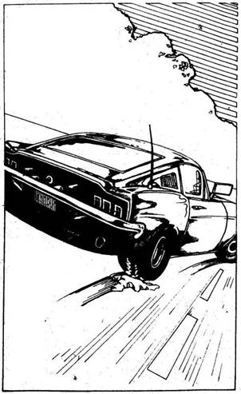
138.
Hátratántorodva elengeded az orgyilkost, aki a földre roskad. Közben a lány beindítja a felspécizett veterán kocsit, és füstölgő kerékkel elzúg az autópálya felé. Mit teszel? Ha üldözőbe veszed, lapozz a 75-re. Ha átkutatód a garázst, lapozz a 146-ra.
139.
A Ford lassít egy kanyar előtt, de te nem veszed le a lábad a gázról. Hátulról nekirontasz, de csak az Interceptorban teszel kárt. 2 páncélzat pontot veszítesz. A Fordot beépített acélrudak védik az ökleléstől. Rájössz, hogy meg kell előznöd, csak így használhatod ellene fegyvereidet. A Ford vezetője, mintha csak olvasna gondolataidban, az út egyik oldalától a másikig cikázik, hogy ne tudj elmenni mellette. Nem kis vezetési tudásra van szükség, hogy megelőzhesd. Dobj két kockával. Ha az összeg akkora vagy kisebb, mint ügyességed, lapozz a 8-ra. Ha nagyobb ügyességednél, lapozz a 287-re.
140.
Jó nyolcvan kilométert haladsz, mikor az út egy T elágazáshoz ér. Úgy döntesz, hogy jobbra fordulsz, San Anglo irányába. Lapozz a 23-ra.
141.
Lepihensz az árnyékban, míg Peter a motort szereli. Peter vidáman fütyörészve csavargat, kalapál, míg te félálomban bóbiskolsz. A szerelő két óra múlva lecsapja a motorház tetejét. - Oké, útra kész - mondja. Kifizeted Peternek a 100 hitelt és a két
csomag gyógyszert, aztán beindítod az Interceptort, és kilősz vele, ahogy csak bírsz. Érzed, mennyivel jobban gyorsul, és elégedetten elmosolyodsz. Peter jó munkát végzett. 1 Szerencse ponttal gazdagabb vagy. Lapozz a 88-ra.

142.
Csikorogva fékezel, de a motort nem állítod le. A hangszórón keresztül felszólítod a férfit, hogy emelje föl a kezét, és ne próbálkozzon semmivel. A motorkerékpár az oldalára dőlve fekszik az út mellett. Fegyverrel a kézben óvatosan kiszállsz, mire a férfi hirtelen lerohan az útról, és az árokba veti magát. Egyszerre csak valami átzúg a levegőben fölötted. Egy kézigránát az. Vakító villanást látsz, és abban a pillanatban fülsiketítő robbanás ver le a lábadról. Tedd próbára szerencséd! Ha szerencséd van, lapozz a 299-re. Ha nincs, lapozz a 25-re.
143.
Attól tartva, hogy a két motoros egy nagyobb bandához tartozik, egyenesen délnek hajtasz, mielőtt a többiek is felbukkannának. Lapozz a 96-ra.
144.
Fényszóród fehér ösvényt vág az éjszakában. Elhagyott kocsikat kell kikerülnöd, s ahogy múlik az idő, egyre nehezebben leszel úrrá fáradtságodon. Dobj két kockával. Ha az összeg akkora vagy kisebb, mint ügyességed, lapozz a 68-ra. Ha nagyobb ügyességednél, lapozz a 168-ra.
145.
A banda egyik tagja hirtelen feláll a tábortűztől, s kocsija felé tart. Miközben a parkolóhoz megy, észreveszi, amint a kerítésnél kuporogsz. Rögtön riasztja a többieket. - Hé, mit szóltok hozzá, látogatónk van- kiáltja, s puskáját rád irányítva megparancsolja, hogy állj fel. Kezedet a magasba emelve tűrnöd kell, hogy a Pusztulás Kutyái nevű banda tíz fegyverese körülvegyen. Sorsod a sivatagi törvényenkívüliek kezében van, s küldetésed biztos kudarc.
146.
A garázsban minden törött s használhatatlan. Az iroda és a műhely szeméttel tele, és mindent vastagon belep a por. A férfi és a lány nyilván csak ritkán használta ezt a helyet, hogy csapdába ejtsék a gyanútlan utazókat. Az egyetlen tárgy, amelynek hasznát veheted, egy súlyos lánc. Összetekered, és az Interceptorba teszed, mielőtt elhajtanál az autópálya felé. Lapozz a 167-re.

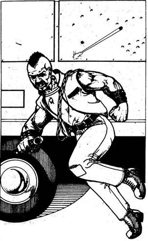
147.
Kiabálva utasítod a polgárokat, hogy a kabinokban keressenek menedéket. Engedelmeskednek, de csata kezdődik köztük és a támadók között. Ám a Pusztulás Kutyái egyik tagja hirtelen kiugrik a fedezék mögül, és a páncélozott benzinszállító felé rohan, amelyet neked készítettek elő a visszaútra. Rálősz, de elvéted, s már nyitja is a kabin ajtaját. Nincs más választásod, mint átrohanni a kereszttűzön, hogy megállítsd, különben elhajt az üzemanyaggal. Tedd próbára szerencséd! Ha szerencséd van, lapozz a 235-re. Ha nincs szerencséd, lapozz a 279-re.
148.
A gázra lépsz, és közben kiengeded a kuplungot. A hátsó kerék megpörög, de nem kapaszkodik meg. Mire mozgásba lendülsz, a Ford már előtted van. 1 szerencse pontot veszítesz. A Ford hirtelen keményen fékez, és átveszed a vezetést. De csak rövid időre, mert visszapillantódból látod, hogy máris a nyomodban van. Most már biztosan tudod, hogy iszonyatosan erős motorja van. Képtelen vagy megakadályozni, hogy neked rontson. Tedd próbára szerencséd! Ha szerencséd van, lapozz a 354-re. Ha nincs szerencséd, lapozz a 247-re.
149.
A mellékút egyenesen vezet, és mivel viszonylag kevés elhagyott kocsi vesztegel rajta, jól haladhatsz. Egy óra vezetés után egy T alakú elágazáshoz érsz. Ha tovább akarsz hajtani dél felé, lapozz a 255-re. Ha inkább balra fordulsz kelet felé, lapozz a 114-re.
150.
A zöld növényzet hamarosan sivárabb tájéknak adja át helyét, száraz cserjék és fű látszik foltokban a barna, köves talajon. Kisvártatva egy nagy elágazáshoz érsz a sivatag határán. Megállsz, és látod, hogy a kelet felé vezető utat elhagyott kocsik torlaszolják el. Ha tovább mész délnek a sivatagba, lapozz a 46-ra. Ha inkább nyugatnak fordulsz, lapozz a 298-ra.
151.
Lehajtva a hídról ismét nyugatnak tartasz. Hamarosan egy T alakú elágazáshoz érsz, és választanod kell, merre mész tovább. Ha tovább akarsz menni nyugat felé, lapozz a 179-re. Ha inkább délnek fordulsz, lapozz a 362-re.
152.
A fékre lépsz, és csikorgó kerékkel megállsz. A Ford hátsó lökhárítódba ütközik, miközben a gránát ártalmatlanul robban fel előtted. Az ütközés azonban 2 pontnyi kárt okoz páncélzatodban. Gázt adsz, majd hirtelen újra fékezel. A Ford megkerül, és gyorsan távolodik. Mivel nem szabad használnod előretüzelő fegyvereidet, úgy határozol, hogy ökleléssel próbálkozol. Lapozz a 139-re.
153.
Jó tempóban haladsz a mellékutakon. Körülötted elvadult mezők, s gondolkodóba ejt, vajon mikor fognak itt ismét vetni. Az út hamarosan egy T alakú elágazásba torkollik, ahol úgy döntesz, hogy délnek fordulsz, San Anglo felé. Lapozz a 225-re.
154.
Amber is elintézi két ellenfelét, s most veszitek észre, hogy míg küzdöttetek a Pusztulás Kutyáival, valaki figyelt benneteket. Egy ötödik személy végig a furgonban maradt. Az Állat az, aki miután látta, hogy bandájának utolsó tagja is a földön maradt, kiugrik, és bikaként fújtatva, fegyvertelenül neked ront. Rettenetes látványt nyújt a holdvilágban. Vaskos, félmeztelen alak, arcát szoros fekete maszk fedi, lábán acélveretes, térdig érő csizma van, ökleit szegecses bőr borítja. Mielőtt mozdulni tudnál, rád veti magát, és karjaival mint egy medve átszorít, majdnem összeroppant. 2 életerő pontot veszítesz. Amber nem mer lőni, nehogy téged találjon el, és kétségbeesetten néz körül valami ütőfegyverért. A kocsi csomagtartójából felkap egy csavarkulcsot, azzal siet segítségedre. Dobj egy kockával. Ha 1 vagy 2 az eredmény, lapozz a 245-re. Ha 3 és 6 között van, lapozz a 376-ra.
155.
Hirtelen egy férfi bukkan fel az ajtóban, és rád szegezett puskával feléd tart. Komoran néz rád. - Hasonlítasz arra a fickóra, aki rálőtt a furgonomra, és megölte a fiamat meg a feleségemet a múlt héten. Most bosszút állok. De én tisztességes vagyok. Ha elkészültél, nyúlj a pisztolyodért - mondja. Rájössz, hogy hiba volt hazudni neki. 1 Szerencse pontot veszítesz. Ha megpróbálod kibeszélni magad a kínos helyzetből, lapozz a 219-re. Ha a pisztolyod után nyúlsz, lapozz a 333-ra.

156.
Igen, mintha ezt mondtad volna az előbb is, csak hát soha nem halottam róluk - mondja a tetovált. - Remélem, nem mindegyikőtök versenyez ilyen jól. Gondolom még találkozunk. - S ezzel legnagyobb megkönnyebbülésedre otthagy, és továbbhajtasz a földúton a főút felé. Ott jobbra fordulsz, délnek. Lapozz a 207-re.
157.
A földút rázós és hepehupás, és rájössz, hogy a por kilométerekről elárulja, hogy közeledsz. De eldöntötted magadban, hogy eléred Sziklavárost. Hirtelen vakító fényt pillantasz meg egy szikla tetején. Tedd próbára szerencséd! Ha szerencséd van, lapozz a 222-re. Ha nincs, lapozz a 315-re.
158.
Beindítod az Interceptort, és szembefordulsz támadóiddal. Egy felspécizett furgont világítanak meg fényszóróid. A kocsi karosszériájához vastag acéllemezeket erősítettek, és az egyik lökhárítójából hegyes öklelőrúd áll ki. Az öklelő két oldalán kikandikáló géppuskák hirtelen tüzet nyitnak rád.
Furgon TŰZERŐ 10 PÁNCÉLZAT 19
Túl közel vagy ahhoz, hogy rakétát lőhessél ki, még ha maradt, sem tudod most felhasználni. Kénytelen vagy géppuskáddal viszonozni a tüzet. Ha túlélsz három fordulót az Autós Csatában, lapozz a 67-re.
159.
Nemsokára ismét az autópályát keresztező hídon vagy. Továbbhaladsz kelet felé. Lapozz a 341-re.
160.
Az őr meghallotta a leguruló kő zaját, és feléd néz. Mindössze néhány méterre van tőled. Ha ráveted magad, hogy elhallgattasd, mielőtt riasztaná a többieket, lapozz a 293-ra. Ha csöndben odalapulsz a talajhoz, lapozz a 367-re.
161.
Megrázod a fejed, s keményen a vezetésre összpontosítasz. Néhányszor csaknem elalszol a kormánykeréknél az éjszaka során, de ahogy a nap első sugarai bearanyozzák a láthatárt, fáradtságod mintha elfújták volna. Megújult lelkesedéssel mész tovább San Anglo felé. Lapozz a 128-ra.
162.
Látod a meglepetést Leonardi arcán, miközben megpróbálod kikerülni parkoló kocsiját. Dobj két kockával. Ha az összeg akkora, vagy kisebb, mint ügyességed, lapozz a 94-re. Ha nagyobb ügyességednél, lapozz a 123-ra.
163.
Hamarosan nagy sebességgel haladsz, s egy útjelző táblához érsz, amely egy Sziklaváros nevű helység felé vezető koszos földútra mutat. Ha délnek fordulsz a Szikla város irányába, lapozz a 157-re. Ha tovább mész kelet felé, lapozz a 45-re.
164.
Az útonállók felszólítanak, hogy szállj ki, és készülj fel. Leugrasz a kabinból, és szembefordulsz a félelmetes kinézetű férfival. Nyílpuskájával a földet célozva hangosan parancsolgat, hogy idegesítsen. De nem zavar meg, és felszólítod, hogy tüzeljen, ha készen áll. Gyorsan felemeli a kezét, hogy jelezze, a párbaj megkezdődik. Dobj egy kockával, és ezt a számot add az útonálló 7 ügyesség pontjához. Ha így annyi pontod van vagy több, mint az útonállónak, lapozz a 132-re. Ha viszont kevesebb, lapozz a 205-re.
165.
Előrehajolsz, és megnyomod a gombot a műszerfalon, kiengeded az olajat. A páncélkocsi egyenesen ráhajt az olajfoltra, és elégedetten figyeled, amint vezetője kétségbeesetten próbálja visszanyerni az uralmat a csúszkáló kocsi fölött. Dobj egy kockával. Ha az összeg 1 és 5 között van, lapozz a 234-re. Ha 6 jön ki, lapozz a 280-ra.
166.
Mindössze egy kerék maradt többé-kevésbé használható állapotban az elhagyott Interceptoron. A gumi lapos ugyan, de meg tudod ragasztani. Nem tart soká leszerelni a kereket, és betenni a saját kocsidba. Ha meg akarod nézni az összetűrt kocsi belsejét, lapozz a 253-ra. Ha inkább továbbhajtasz dél felé, lapozz a 13-ra.
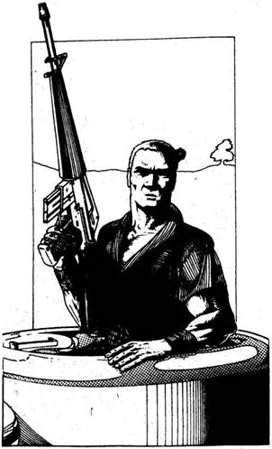
167.
Az autópályán jó tempóban utazhatsz, csak egy-egy elhagyott kocsi miatt kell lassítanod néha. Izgalmas szabadon vezetni anélkül, hogy tartanod kéne a rendőröktől, mert megszegtél valamilyen szabályt. Elmosolyodsz, amikor a sebesség eléri a 190 kilométert óránként, de örömöd rövid életű. Hirtelen egy vörös Chevroletet pillantasz meg, amint épp feléd tart. Erős acélpáncélzat fedi, tetején egy kis toronyban egy géppisztolyos alak ül. Arra gondolsz, hogy inkább megint a rendőrséggel bajlódnál, mint a régi szép időkben. Nagy levegőt veszel, és ujjadat a géppuskád ravaszára tesszed.
Vörös Chevrolet TŰZERŐ 8 PÁNCÉLZAT 15
Ha sikerül győznöd a Chevrolet ellen ebben az Autós Csatában, lapozz a 188-ra.
168.
Késő éjszaka olyan fáradt vagy, hogy reakcióidőd lelassul. Egy busz jelenik meg fényszóróid fényében, és későn próbálod kikerülni. Dobj két kockával, és az összeget vond le az Interceptor páncélzatából. Ha túléled a karambolt, lapozz a 327-re.
169.
A férfi egy jó órát dolgozik, külön vaslemezeket szerel föl, és ahol lehet, befoltozza a lyukakat. Az Interceptor borzasztóan néz ki, de legalább jobban védve van. 10 páncélzat pontot nyersz. Megköszönöd a jó munkát, kifizeted a férfit, és továbbmész keletnek. Lapozz a 259-re.
170.
A férfi nem veszi észre, hogy óvatosan az ujjaidra csúsztatod a bokszert. Felpattansz, és ököllel az arcába vágsz. Dobj két kockával. Ha az összeg akkora, vagy kevesebb, mint ügyességed, lapozz a 363-ra. Ha nagyobb ügyességednél, lapozz a 87-re.
171.
Szerencsére egyik eltévedt golyó sem talál el. Kíváncsi vagy, vajon meddig fognak gyógy és kötszereid kitartani, ha a vállalkozás továbbra is ilyen veszélyes lesz. Amikor végre elég erősnek érzed magad, hogy továbbhajts, az Interceptorhoz bicegsz, majd elszáguldasz kelet felé. Lapozz a 22-re.
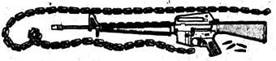
172.
Csodával határos módon sikerül keresztülhajtanod a lezúduló sziklák és kövek között anélkül, hogy eltalálnának. Megkönnyebbülten sóhajtasz fel, mikor túljutsz a hegyomláson, és biztonságosabb sebességre kapcsolsz. Lapozz a 351-re.
173.
Újabb aknát lőnek ki a farmházból, s hatása végzetes a megrongált Interceptorra. Nem éled túl a robbanást.
174.
A férfi elköveti azt a tévedést, hogy a melledre céloz, nem tudva, hogy páncélt viselsz. A golyó nem tesz benned kárt. Nem adsz neki még egy esélyt, feltéped az ajtót, s kirángatod a vezetőülésből a földre. Hamar felülkerekedsz rajta, és utasítod, hogy állítsa le a támadást. Habozva beleegyezik, és a lövöldözés azonnal megszakad. Pisztolyodat túszodra irányítod, miközben a Pusztulás Kutyái visszahúzódnak a sivatagba. Aztán a San Angló-i finomító lakóinak éljenzése közepette túszodat társai után engeded. Miután segítettél rendbe hozni a bejáratot, közlöd, hogy indulnod kell. Bemászol a benzinszállító fülkéjébe, és búcsút intesz. Fájó szívvel hagyod ott hűséges Interceptorodat, de küldetésed jelentősége megvigasztal. Két kocsi egészen a sivatag határáig kísér észak felé. Ott visszafordulnak, és ismét egyedül vagy az országúton. Úgy határozol, hogy egyenesen észak felé mész, kihagyva az idefelé tett kerülőket. A nap események nélkül telik, és amikor leszáll az este, még mindig vezetsz. Amikor már olyan fáradt vagy, hogy nem tudsz tovább hajtani,
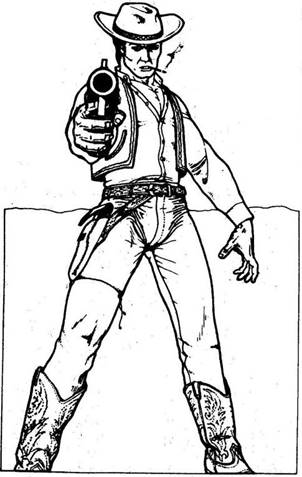
beállsz egy motel parkolójába. A szobák ablakai sötétek. Ha a fülkében akarsz aludni, lapozz a 218-ra. Ha inkább bemész a motelba, lapozz a 335-re.
175.
A gránát nem robban fel, és tovább száguldasz a sárga kocsi előtt. Úgy ötven méter lehet az előnyöd. Lapozz a 340-re.
176.
Dobj két kockával. Ha az összeg akkora vagy kisebb, mint ügyesség pontjaid száma, lapozz a 108-ra. Ha nagyobb, lapozz a 350-re.
177.
Körülbelül nyolcvan kilométert hajtasz a sivatag peremén, mire egy nagyobb elágazáshoz érsz. Elhagyott kocsik torlaszolják el előtted az utat, ezért úgy döntesz, hogy jobbra fordulsz dél felé. Lapozz a 46-ra.
178.
Kétségbeesetten fordítod el az indítókulcsot és nyomod a gázpedált, de a motor nem indul be. Felnyitod a motorháztetőt, és látod, hogy a benzincső leesett a porlasztóról. Visszahelyezed, és épp be akarsz ülni a kocsiba, amikor hirtelen végigfut a hátadon a hideg. Megfordulsz, és egy férfit látsz magad mögött. Mozdulatlanul áll, enyhén szétterpesztett lábbal, és egy jókora pisztolyt szegez rád, valószínűleg Magnumot. Cowboynak öltözött, a csizmától a Stetson-kalapig. Szájából cigaretta lóg. Halkan rád mordul. - Védd magad.
Törvényenkívüli ÜGYESSÉG 9 ÉLETERŐ 12
A Tűzharc szabályai szerint játszd le a küzdelmet, de Ügyességedből vonj le 2 pontot az első fordulóban, mert a törvényenkívülié a kezdeményezés. Ha győzöl, lapozz a 375-re, de vonj le mindig 1 Ügyesség pontot, ha egynél többször eltaláltak.
179.
Az út közepén egy férfi áll. Farmert és dzsekit visel, fején motorossisak van, és kétségbeesetten integet. Ha meg akarsz állni, hogy beszélj vele, lapozz a 142-re. Ha inkább elmész mellette, lapozz a 215-re.
180.
Megállítod a kocsit, és a kanna tartalmát a tankba öntöd. Tudod, hogy nem elég a benzined San Anglóig, és sejtelmed sincs, honnan szerezz üzemanyagot a kihalt sivatagban. Lehangol a gondolat, és ezen rágódsz, amikor újra útnak indulsz. Lapozz a 243-ra.
181.
Elégedetten nézed, ahogy a páncélkocsi első kerekeit kilyuggatják a szögek és a vezetőnek keményen fékezni kell. Gyorsítasz, és a megbénult páncélkocsit hamarosan magad mögött hagyod. Lapozz a 47-re.
182.
Kínlódva bekúszol a magas fűbe, és vársz. Hamarosan közeledő léptek zaját hallod. Aztán a füvön keresztül egy ápolatlan férfit pillantasz meg néhány méterre tőled. Pisztoly van a kezében, szája
szélén cigaretta csüng, fején vörös hajpánt van. Nyilván ő az, aki a csapdát elhelyezte. Hirtelen észre veszi a fűbe vezető vérnyomokat. Megfordul és vaktában tüzelni kezd. Tedd próbára szerencséd! Ha szerencséd van, lapozz a 227-re. Ha nincs, lapozz a 116-ra.
183.
A Ford vezetője előre látja, hogy kitörsz, és nyugodtan megnyomja gránátvetője gombját. A gránát átrepül az Interceptor fölött, és előtted gurul az úton. Mit teszel? Gyorsítasz, hogy átszáguldj fölötte? Lapozz tovább a 43-ra. Vagy fékezel? Lapozz a 152-re.
184.
A Pusztulás Kutyáit túlzottan elragadta a mérgük ahhoz, hogy becsületszavukkal törődjenek. Fegyvert rántanak, és tűzharc kezdődik. Kettejükre te lősz, míg a másik kettőre Ambernak van gondja.
Pusztulás Kutyái I. ÜGYESSÉG 7 ÉLETERŐ 13
Pusztulás Kutyái II. ÜGYESSÉG 8 ÉLETERŐ 14
Ebben a Tűzharcban mindkét ellenfeled külön tüzel rád mindegyik fordulóban, s el kell döntened, melyikükkel harcolsz előbb. A másik ellen a szokásos módon veted be a Tűzerődet, de nem sebesíted meg akkor sem, ha a te Támadóerőd a nagyobb. Vedd úgy, hogy golyója nem talált. Természetesen ha az ő Támadóereje nagyobb, a szokásos módon megsebesít. Ha győzöl, lapozz a 69-re, de vonj le 1 pontot végleg Ügyességedből, ha egynél többször meglőttek a harcban.
185.
A szobát, amelybe az ajtó nyílik, láthatóan lakják. Az asztalon egy csészében kávé, a falnak támasztva egy motor első kereke, a belső a padlón hever. Valaki nyilvánvalóan épp kereket akart javítani. Egy szerszámkészlet is van az asztalon, amelyben egy komoly drótvágót is találsz, amelyet magaddal viszel. Ha eddig nem tetted meg, kinyithatod a szemben levő ajtót is - lapozz a 72-re; vagy elhagyhatod a házat - lapozz a 246-ra.
186.
Szinte szünet nélkül ásítasz már, és nagyon nehéz a vezetésre figyelni a nyílegyenes úton. A fárasztó nap után egyszerűen elalszol a kormánynál, s belerohansz egy elhagyott teherautóba. Dobj két kockával, és az összeget vond le az Interceptor páncélzatából. Ha túléled az ütközést, lapozz a 348-ra.
187.
Nem tudod mivel kiszívni a benzint a tankból, és nincs más választásod, mint továbbmenni dél felé. Lapozz a 118-ra.
188.
Megállítod az Interceptort, hogy megvizsgáld a lángoló roncsot. Kik voltak ezek az emberek, és miért támadtak meg figyelmeztetés nélkül? Megcsóválod a fejed, és ismét a gázra lépsz, szeretnél már célhoz érni. Egy pénzszállító autó mellett mész el, és a benn levő immár haszontalan pénzre gondolsz, amikor hirtelen hangot hallasz a rádió recsegésén keresztül. Új Remény egyik vezető embere az. Egy motoros banda megtámadta Új
Reményt, nyolc embert megöltek, majd véres harc után visszavonultak. Felszólít, hogy próbálj rájuk találni, mert elrabolták Sinclairt, a tanács vezetőjét. Közlöd, hogy vetted az adást, és elköszön. Jó egy órát nyugodtan haladsz, amikor látod, hogy az üzemanyagod fogytán van. Megállsz, és az egyik kanna tartalmát tankodba öntöd. Hamarosan benzint kell szerezned valahogy. Néhány kilométerrel odébb már tudod, hogy nincs szerencséd. Tömeges karambol lehetett a járvány kitörésekor, és rengeteg elhagyott kocsi zárja el az utat. Nem tudsz tovább menni az autópályán. Visszahajtasz a legközelebbi leágazásig, és lefordulsz az autópályáról. El kell döntened, merre indulj a keresztúton. Ha keletnek, lapozz a 341-re. Ha inkább nyugatnak, lapozz a 66-ra.
189.
Egy földút ágazik le jobbra. Keréknyomokat látsz rajta, úgy tűnik, valaki nemrégiben járt erre. Ha erre akarsz menni, lapozz a 24-re. Ha inkább folytatod az utat San Anglo felé, lapozz a 207-re.
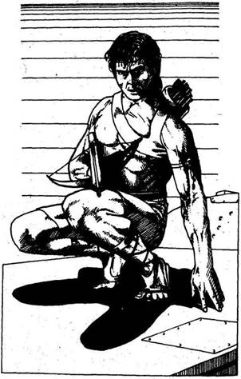
190.
Idegesítő tehetetlenül ülni a fülkében. Csend van, aztán lépéseket hallasz a vontató tetején. Az útonálló hátulról akar megtámadni. Kinyitod a vezetőfülke ajtaját, és felmászol a fémlétrán. Amint feltűnik a fejed, az útonálló rád lő nyílpuskájával. Tedd próbára szerencséd! Ha szerencséd van, lapozz a 345-re. Ha nincs, lapozz a 30-ra.
191.
Egy golyó kilyukasztja az első kerekedet. Egy pillanatra elveszted uralmad a kocsi fölött, és nagy sebességgel egy sziklának ütközöl. Dobj egy kockával, és az eredményt vond le a kocsi páncélzatából az ütközés miatt. Defektes gumival nem hajthatsz tovább, de veszélyes volna kiszállnod a kocsiból, amíg lőnek rád. Hirtelen újabb vakító villanást látsz, a farmház emeleti ablakából egy páncélököllel lőnek. Mozdulatlan célpont vagy, és el is találnak. Dobj két kockával, és az összeget vond le autód páncélzatából. Ha túléled a robbanást, lapozz a 292-re.
192.
A tetovált férfi nem ugrik be a trükknek, és könnyedén kikerüli a rúgást. Géppisztolyát rád szegezi, és felszólít, hogy menj előre, de amikor megfordulsz, a markolattal tarkón vág. Eszméletlenül zuhansz a földre. Lapozz a 100-ra.
193.
Lebuksz az ajtó mögé, s a tőr ártalmatlanul pattan le róla. A férfi hónalja alatti tokból kis revolvert ránt elő, készen a tűzharcra.
Bandita ÜGYESSÉG 7 ÉLETERŐ 11
A Tűzharc szabályai szerint játszd le a küzdelmet, de adj 1 pontot Ügyességedhez, mert fedezékben vagy a kocsi ajtaja mögött. Ha győzöl, lapozz a 64-re, de vonjál le Ügyességedből végleg 1 pontot, ha egynél többször eltaláltak a tűzharcban.
194.
Mindkét homokfutó lángba borul. Úgy döntesz, hogy elhúzol, amilyen gyorsan csak lehet. Nyolcvan kilométerrel délre egy sor lapos síkságban végződő hegyet látsz kiemelkedni a sivatagból. Az út e hegyek egyikéhez vezet, de van egy másik út is, amelyen kelet vagy nyugat felé fordulhatsz. Ha balra fordulsz, lapozz a 257-re. Ha jobbra, lapozz a 211-re.
195.
Lenyomod a kilincset, és benyitsz. Egy villanás, fülsiketítő zaj, s a robbanás hátrahajít. Az ajtó nyitása robbantotta a szerkezetet. Dobj két kockával, és a számot vond le az életerődből. Az ajtó lecsüng a pántról, s látod, hogy a mentőautó üres. Tulajdonosa nyilván úton van, hogy lássa, kit kapott el. Túl gyengének érzed magad, hogy elérd az Interceptort, és fedezékbe kúszol. Ha a bozótban akarsz elrejtőzni, lapozz a 182-re. Ha a mentőautó alá, lapozz a 356-ra.
196.
Emlékszel a férfi tanácsára, és nagyon lassan haladsz a kanyonban, miközben figyeled, nem hullanak-e a sziklák. Hirtelen fenyegető morajlást hallasz magad előtt. Megállsz. Hegyomlás van előtted, sziklák, kövek zuhannak az útra. De hamarosan véget ér, és mivel az utat nem torlaszolják el teljesen a kövek, továbbhaladsz. Lapozz a 351-re.
197.
Megállítod a kocsit, és kiszállsz, hogy a kanna tartalmát beleöntsd a tankba. Nem sok benzin volt a kannában, és tudod, hogy valahogyan üzemanyaghoz kell jutnod, ha el akarod érni San Anglót. Kora este lesz, mire elindulsz, és jobb oldali ablakodon keresztül látod, hogy a nap lenyugszik. Hamarosan sötét lesz, és el kell döntened, mit teszel?
Lehajtasz az útról, és az Interceptorban
alszol? Lapozz a 4-re.
Keresel egy épületet, hogy abban
aludj? Lapozz a 321-re.
Egész éjszaka vezetsz? Lapozz a 144-re.
198.
Eléred a szögesdrót kerítést, és nyolc kocsit látsz a parkolóban. A kerítés túl sűrű ahhoz, hogy a rések között átférjél. Ha viszont van drótvágó ollód, lapozz a 85-re. Ha nincs, lapozz a 255-re.
199.
A farmház könnyű célpont, és a rakéta nem téveszt célt. A robbanás lerombolja a házat, tégla- és fadarabok szállnak szanaszét. Ahogy a por leszáll, óvatosan előreindulsz, egyik ujjadat a géppuska ravaszán tartva. Megállsz az égő épület mellett, de nem látod élet jelét. Leállítod a motort, és letekered az ablakot. Kétségbeesett segélykiáltásokat hallasz. Ha ki akarsz szállni az autóból, hogy megtudd, ki az, lapozz a 262-re. Ha inkább kihajtasz a városból dél felé, lapozz a 353-ra.
200.
Sikerül elkerülnöd a frontális ütközést, de a furgon oldalának ütközöl. Hegyes öklelőrúd áll ki belőle, amely áthatol az Interceptor páncélján, és a két kocsi összeakad. A furgon hangosbeszélője azonnal felugat. Az Állat azt üzeni, hogy állj ki vele puszta kézzel, ha nem akarod, hogy tűzharc legyen. Ha kiállsz az Állattal, lapozz a 269-re. Ha a tűzharcot választod, lapozz a 102-re.
201.
Hirtelen tompa durranás hallatszik, és az Interceptor az út egyik oldaláról a másikra csapódik. Dobj két kockával, és az összeget vond le a kocsi páncélzatából. Ha túléled a robbanást, lapozz a 266-ra.
202.
Az őr összeesik, de nem veszti el az eszméletét, és hívja a barátait. Mind felpattannak, és oda rohannak, ahol verekedtek. Amber rád kiállt, hogy meneküljetek, de erre már nincs idő, tucatnyi golyó fúródik beléd. Kalandod véget ér.
203.
Az út üres, csak ritkán kell elhagyott autókat kikerülnöd. A sebességmérő jóval többet mutat, mint a régi sebességhatár, de hát nincs már, aki megbüntessen. Örömöd rövid életű, felfordult kocsik, felborult teherautók torlaszolják el az utat. Lelassítasz, és veszélyt szimatolva szemügyre veszed a terepet. Mit teszel?
Kilősz egy rakétát a torlaszra? Lapozz a 372-re.
Megpróbálod kikerülni? Lapozz a 317-re.
Megfordulsz, visszamész a legutóbbi elágazáshoz,
és délnek indulsz? Lapozz a 278-ra.
204.
A golyó elzúg melletted, és azonnal indítasz. Porfelhő közepette elzúgsz a földúton az autópálya felé, ahol jobbra fordulsz, és dél felé száguldasz. Lapozz a 207-re.
205.
Ellenfeled gyorsabb, mint te vagy, és halálos pontossággal lövi ki melledbe a nyílpuska vesszőjét. Vadul tüzelve a földre zuhansz. Kalandod véget ér.
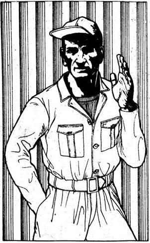
206.
Rálősz a csomagtartó zárjára. A harmadik lövésre kinyílik. Egy bilincset, egy térképet és 200 hitelt találsz benne. A bilincset és a hitelt a dzsekid zsebébe teszed, majd szemügyre veszed a térképet. Egy vörös kör van Új Remény köré húzva. Nyilván a két férfi annak a bandának a tagja, amely megtámadta városodat. Egy Sziklaváros nevű helység kereszttel van megjelölve a térképen. Nincs messze onnan, ahol vagy, dél felé. Nem kétséges előtted, hogy ez a motorosok lakóhelye. Úgy döntesz, hogy kicseréled az Interceptor kerekét, mielőtt a motorosok berátai megérkeznének. Lapozz a 346-ra.
207.
Egy kézzel írott tábla mellet zúgsz el. - "Peter a motorok doktora. Egy mérföld balra." - Lelassítasz, és megállsz egy kőből épült ház előtt, amely mellett rozsdamentes acélból emelt műhely van, tetején felirattal: - "Gyertyakulcs Peter." Néhány kocsi parkol az udvarban, és ahogy megállsz, egy vékony, sápadt férfi bukkan elő a műhelyből. Olajos szerelőruha van rajta, és baseballsapka. Int üdvözlésül, majd így szól: - Szép kocsi. Biztosan jó gyors is. De még gyorsabb lenne, ha én kezelésbe venném. Ha érdekel a dolog, hitelben és javakban kell fizetned. Jó munkát végzek. - Ha megbízod a szerelőt, hogy tuningolja fel a motort, lapozz a 28-ra.
Ha elutasítod az ajánlatát, és továbbhajtasz dél felé, lapozz a 88-ra.
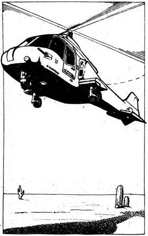
208.
Megtiszteltetés volt, hogy ilyen civilizált módon küzdhettem meg veled, mondja a férfi, és hozzáteszi, hogy miután átmész az alagúton, egy kanyargós kanyonba érsz, s vigyázz, mert sűrűn van hegyomlás. Megköszönöd a fura alak tanácsát, és mihelyt buszával eláll az útból, behajtasz az alagútba. És valóban egyre kanyargósabb hegyi úton haladsz. Lapozz a 196-ra.
209.
Amikor átnyújtod a kulcsokat a gazfickónak, az csak vihog, és feszítővasával rád veti magát. Elveszted eszméletedet, és mire magadhoz térsz, a párocskának és szuper oldsmobiljuknak hűlt helye akárcsak az Interceptornak. Megbuktál a küldetéseden.
210.
Dobj egy kockával. Előbb a Jaguár E-típusnak, majd az Interceptornak, de saját kocsidnak adjál egy plusz pontot, mert a motort feltuningoltattad. Addig csináld ezt, míg valamelyik kocsi el nem éri a 24-et, és ezzel a célt. Ha győzöl, lapozz az 54-re. Ha elveszíted a versenyt, lapozz a 322-re.
211.
Hamarosan magad mögött hagyod a hegyeket, s az út továbbra is nyugat felé vezet. Fél óra múlva a motor kihagy, és nem sokkal később teljesen leáll. Kiszállsz a kocsiból, és megállapítod, hogy homok került a porlasztóba. Épp kitisztítod, amikor egy motor mély dörmögését hallod a magasból. Felnézel, és egy helikoptert látsz a fejed fölött. Sárga
fluoreszkáló festékkel van bemázolva, s a pilóta mellett egy lövész ül. Hangszórón keresztül utasítanak, hogy rakd ki az Interceptor rakétáit az útra. Ha engedelmeskedsz, lapozz a 11-re. Ha inkább beugrasz az Interceptorba és tüzet nyitsz a helikopterre, lapozz a 83-ra.
212.
Az autó porfelhőt kavarva, csúszkálva megáll, és revolvereddel tüzelve kiugrasz belőle. A két motoros viszonozza a tüzet, de sikerül eltávolodnod az Interceptortól, s a földre vetned magad egy bokor mögé, mielőtt az akna robbanna. A robbanás tönkreteszi az egyik kerekedet, és 2 Páncélzat pontot veszítesz. Mikor a por leszáll, egy ideig csend van, majd az egyik motoros megszólal: - Dobd ide a pisztolyt és a kulcsokat. Csak a kocsidat akarjuk. - Ha engedelmeskedsz, lapozz a 283-ra. Ha inkább harcolsz, lapozz a 6-ra.
213.
A poros út rögtön beszívja az olajat, és így az nem tesz kárt a mögötted jövő kocsiban. 1 Szerencse pontot vesztesz. A Ford vezetője válaszol, egy gránátot lő át kocsid fölött. A lövedék előtted esik az útra. Ráhajtasz, s tompa durranás hallatszik, ahogy az acéllemez a váz alatt felfogja a robbanást. Dobj két kockával, és az összeget vond le kocsid Páncélzatából. Ha túléled a robbanást, lapozz a 294-re.
214.
Ahogy a fa alatt üldögélő csoport felé közeledtek, rájössz, hogy ez az utolsó esélyed a menekülésre. Úgy teszel, mintha megbotlanál, aztán hirtelen kirúgsz oldalra a tetovált férfi felé. Dobj egy kockával. Ha 1 és 4 között dobsz, lapozz a 192-re. Ha 5-öt vagy 6-ot dobsz, lapozz a 347-re.
215.
Nyugat felé haladsz, dél felé vezető leágazást keresve. Amikor odaérsz, látod, hogy az elágazás mögött elhagyott kocsik torlódtak össze véget nem érő sorba, kilométereken keresztül eltorlaszolva az utat. Ha akarnád sem mehetnél tovább nyugat felé. Ha rögtön délnek fordulsz, lapozz a 149-re. Ha inkább megállsz, és előbb benézel néhány elhagyott kocsiba, lapozz a 10-re.

216.
Az út egy T alakú elágazásba torkollik, és itt végre balra fordulhatsz dél felé. Lapozz a 243-ra.
217.
A férfit nem zavarja, hogy felé futsz. Tovább énekel valami olyasmit, hogy meg kell tisztítani a földet a dekadens múlt összes maradványától. Épp akkor érsz oda hozzá, amikor a meggyújtott gyufát az Interceptorra akarja dobni. Dobj két kockával. Ha az összeg akkora vagy kisebb, mint Ügyességed, lapozz a 285-re. Ha nagyobb Ügyességednél, lapozz az 50-re.
218.
Bár rosszul alszol, és a legkisebb zajra is felriadsz, az éjszaka békésen telik. A nap első sugarai már az úton találnak. Egy órán keresztül gond nélkül haladsz, mígnem tükrödben két motort látsz közeledni. Sajnos a benzinszállító nincs hátrafelé ható fegyverekkel felszerelve, de fülkéjének tetején motorral irányított géppuska van. Ahogy a motorosok közelebb érnek, látod, hogy mindketten nyílpuskákkal vannak felfegyverkezve. Kétoldalt
elhúznak melletted, és íjukkal célba veszik első kerekeidet. Géppuskáddal előbb a bal oldali motorost veszed célba. Dobj két kockával. Ha az összeg akkora vagy kisebb, mint Ügyességed, lapozz az 52-re. Ha nagyobb Ügyességednél, lapozz a 324-re.
219.
Gyorsan közlöd vele, hogy nem te ölted meg a feleségét és a fiát. Tedd próbára Szerencséd! Ha szerencséd van, lapozz a 288-ra. Ha nincs, lapozz a 236-ra.
220.
A motorosnak valahogy sikerült kikerülnie az útra szórt szögeket, és utasa újra tüzet nyit. Úgy döntesz, hogy az Interceptor géppuskájával viszonzod a tüzet, bár a kanyargó motort nem könnyű eltalálni.
Oldalkocsis motor TŰZERŐ 9 PÁNCÉLZAT 8
Ha győzöl ebben az összecsapásban, lapozz a 143-ra.
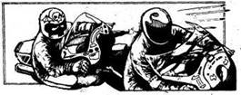
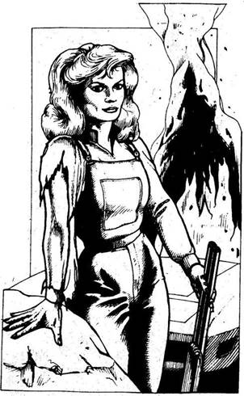
221.
Az út keskeny fekete vonalként húzódik a kísértetiesen vörös vidéken keresztül. A forróság remegő hullámokban emelkedik a sivatag fölé, s légkondicionálód morogva próbál egy kis hűvös levegőt biztosítani. A rádióban csak légköri zörejeket hallasz. A padlóig nyomod a gázpedált, hogy minél hamarabb túljuss ezen a vidéken. Előtted fekete füstfelhő emelkedik az ég felé. Lelassítasz, és megállsz egy égő autó mellett. Egy régi sportkocsi az, még a XX. századból, egy Corvette V-8-as, 200 lóerős motorral. A múlt egy darabja ég el ebben a tűzben. Valamivel távolabb egy szőke lány támaszkodik egy sziklának. Fekete overallt visel, kezében vadászpuska van. Ahogy meglát közeledni, kiszalad az útra, és int, hogy állj meg. Megállsz, de a revolveredre teszed a kezed, hátha el akarja rabolni az Interceptort. Megkérdezed, hová megy, és komoly hangon válaszol. - Dél felé, ennél több ne érdekelje. Nem akarok mást, csak hogy elvigyen, hacsak nem ahhoz a bandához tartozik, amely megtámadott. - Közlöd vele, hogy San Anglóba kell eljutnod, és odáig szívesen elviszed. - San Anglóba - kiállt fel a lány. - Magát várjuk Új Reményből! - Beugrik a kocsiba, és bemutatkozik. Ambernak hívják. San Anglo napokkal ezelőtt járőrkocsikat küldött eléd, de biztosnak kellett lennie abban, hogy valóban te vagy az. Azt is megtudod, hogy bonyodalmak vannak. San Anglót ez elmúlt két nap óta folyamatosan ostromolja egy országúti banda, az úgynevezett Pusztulás Kutyái. Ezek támadták meg őt is nem egészen egy órával ezelőtt. Le akarják mészárolni San Anglo lakóit, hogy hozzájussanak a benzinhez. Lehetetlen
bejutni San Anglóba anélkül, hogy felfegyverkezett autóikkal, motorjaikkal meg ne támadnának. Csak egy megoldás van, éjszaka be kell lopózni a táborukba, és tönkretenni a járműveiket. Látod rajta, hogy komolyan beszél, és hiszel neki. Beleegyezel, mire a lány izgatottan a műszerfalra csap. Irány dél, amilyen gyorsan csak lehet. Fél óra múlva megállít. A távolban füst emelkedik a levegőbe. - A San Angló-i finomító - mondja büszkén. - Inkább meghalunk, de nem engedjük, hogy a benzin ezeknek a kezébe kerüljön. Hajts le az útról. Egy óra múlva sötét lesz, akkor gyalog megyünk tovább a Pusztulás Kutyáinak tábora felé. - Tedd próbára Szerencséd! Ha szerencséd van, lapozz a 7-re. Ha nincs szerencséd, lapozz a 331-re.
222.
Valaki egy páncélököllel lőtt rád, de az akna ártalmatlanul robban néhány méterre tőled. Lapozz az 53-ra.
223.
Felemeled a kocsit, és fölszereled a tartalék kereket. Néhány perccel később már ismét az úton vagy, óvatosan elkerülve az éles köveket. Egy órát
haladsz ezen a hepehupás úton, míg végre egy másik úthoz érsz, amely dél felé vezet. Azonnal ráfordulsz, megkönnyebbülten mész újra sima úton. Elhaladsz egy pótkocsis teherautó mellett, amely, úgy tűnik, csak nemrég óta áll itt. Ha meg akarsz állni, hogy átvizsgáld, lapozz a 104-re. Ha megállás nélkül továbbhajtasz, lapozz a 118-ra.

224.
Az első versenyt egy sárga Ford és egy vörös Porsche vívja. Elszáguldanak, közben egymásnak ütköznek, és fegyverek armadájával támadják egymást. Úgy hat perc múlva térnek vissza. A Ford nyer, de mindkét kocsi úgy néz ki, mintha roncs volna. A Ford vezetője kipattan kocsijából, és a nézők éljenzése közepette élvezi győzelmét. Te visszamész az Interceptorhoz, és visszahajtasz a dél felé vezető műútra. Lapozz a 207-re.
225.
Az út elvadult mezőkön át vezet, de legalább nincsenek rajta akadályok. Megnézed kilométer-számlálód, mennyit jöttél, s közben látod, hogy a benzintank csaknem teljesen üres. Ha sikerült nemrégiben egy teli kanna benzint szerezned, lapozz a 197-re. Ha nem sikerült, lapozz a 364-re.
226.
Támadód képzett birkózó, s egy ügyes fogással megdob, majd lelök a tetőről. Súlyos puffanással esel a földre, és elveszted az eszméletedet. Mire magadhoz térsz, a benzinszállítónak hűlt helye. Megbuktál küldetéseden.

227.
A golyó néhány méterre tőled fúródik a földbe. Azonnal felülsz, és viszonzod a tüzet.
Útonálló ÜGYESSÉG 8 ÉLETERŐ 12
A Tűzharc szabályai szerint játszd le ezt a küzdelmet, de vonjál le Ügyességedből 1 pontot sebesülésed miatt. Ha győzöl, lapozz a 131-re, de vonjál le Ügyességedből végleg 1 pontot, ha egynél többször megsebesültél.
228.
- Hazudsz. Rögtön gondoltam, hisz nem úgy nézel ki, mint aki valamelyik bandához tartozna. Halljuk, mit szólnak a többiek? - Géppisztolyával a fák felé int, amelyek alatt barátai üldögélnek. Ha van bokszered, lapozz a 273-ra. Ha nincs, lapozz a 214-re.
229.
Óvatosan felhajtasz a hídra, s vigyázol, hogy kerekeid el ne hagyják a két fő gerendát. Hirtelen egy hangos robbanás a folyóba repíti az Interceptort. Valaki aláaknázta a hidat. Megbuktál a küldetéseden.
230.
Úgy harmincméternyire az úttól kis fehér épület van, amely körül félig szétszedett kocsikat látsz. Ajtók, kerekek, sárhányók, motorok, sebességváltók, ülések mindenütt, s középen egy férfi dolgozik egy kocsin. Egy ajtót hegeszt, s szikrák repkednek körötte. Annyira a munkájára figyel, hogy nem hallja érkezésed. Ha meg akarod beszélni vele, hogy javítsa meg az Interceptort, lapozz a 15-re. Ha inkább továbbhajtasz, lapozz a 259-re.
231.
Az első kerekek már a hídon vannak, de a hátsók nem tudnak felkapaszkodni. Az autó visszacsúszik, és harminc métert zuhan a folyóba. Megbuktál küldetéseden.
232.
A nézők kis csoportja a Ford köré gyűlik, és gratulál vezetőjének. Lassan elhajtasz mellette, és intesz neki üdvözlésül, de nem állsz meg. Keserű csalódást érzel, hogy elvesztetted a versenyt, és sietsz vissza a dél felé vezető főútra. Lapozz a 207-re.
233.
Körülnézel, de nem találsz semmit, csak szemetet és törött bútorokat. Az ajtó csak azért volt csapdával összekötve, hogy elrettentse a behatolókat.
1 Szerencse pontot veszítesz. Ha eddig nem tetted meg, kinyitod a szemközti ajtót is - lapozz a 185-re; vagy elhagyhatod a házat - lapozz a 246-ra.
234.
Vezetője nem képes úrrá lenni a megcsúszó páncélautón, és a kocsi az árokba fordul. Elégedetten mosolyogva gyorsítasz, és magára hagyod a mozdulatlan járművet. Lapozz a 47-re.
235.
Lehajolva futsz a nyitott térségen keresztül, s nem talál el golyó. Lapozz a 40-re.
236.
A férfi végigmér, és kiköp, mielőtt válaszolna. - Azt mondtam, védd magad, átkozott gyilkos. - Nincs más választásod, engedelmeskedned kell. Lapozz a 333-ra.
237.
Mindössze nyolc kilométert tudsz haladni, aztán az Interceptor elakad a lágy homokban. A kerekek kipörögnek, a levegő megtelik homokkal, de csak mélyebbre ásod magad. Elátkozod balszerencséd, de nem tudod segítség nélkül kiszabadítani a kocsit. Megpróbálod kiásni, de reménytelen vállalkozás. Nincs más választásod, ott kell hagynod az Interceptort. Ha szerencséd van, valahogy visszajutsz Új Reménybe, és talán egyszer újra megpróbálhatod, hogy eljuss San Anglóba.
238.
A kerék nem ment teljesen tönkre, és meg tudod ragasztani U-Fixszel a gumit. Hamarosan újra kelet felé haladsz. Lapozz a 119-re.
239.
A Ford előtted ér a hídra, és hiába adsz gázt, már nem tudod behozni. Mindössze kétszáz méterre van a célvonal, s a versenyt elveszíted, a Ford jó kocsihosszal előtted ér a célba. 1 Szerencse pontot veszítesz, s lapozz a 232-re.
240.
Előhúzol 200 hitelt a zsebedből, és odaveted a sebhelyesnek. Kikapja a kezedből. - Mindig akad egy balek - vigyorog. - Ülj be a kocsidba, vágjunk neki. Nyolc kilométert megyünk ezen a földúton, megfordulunk a fehér háznál, és nyomás vissza. Én ne feledd, a Blitz-versenyen rakéták és golyók kivételével mindent szabad használni. - Beszállsz az Interceptorba, beindítod, és lassan előregurulsz a rajtvonalra. Ellenfeled melletted túráztatja élénksárga Fordját. Látod, hogy gránátvetővel és két géppuskával van felfegyverkezve. A két kocsi között egy lány áll, aki felemel egy fehér törülközőt, majd hirtelen leereszti, s ezzel a verseny megkezdődik. Dobj két kockával. Ha az összeg akkora vagy kisebb, mint Ügyességed, lapozz a 3-ra. Ha nagyobb Ügyességednél, lapozz a 148-ra.

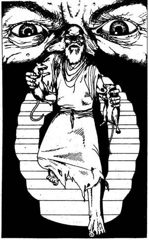
241.
A benzinszállító szerszámosládájában találsz egy vasrudat, ezzel felfeszíted a motelajtót. Óvatosan belépsz az előtérbe, ahol orrod azonnal megtelik a rothadó növények szagával. Körbevilágítasz zseblámpáddal, s látod, hogy egy lépcső vezet az emeletre. Ahogy szemügyre veszed a terepet, egy szakadozott rongyokba öltözött izmos öreg jelenik meg a lépcső tetején. Mindkét kezében egy jól fejlett patkányt tartva rohan feléd. - Ez a patkányember otthona - visítja -, megfizetsz hívatlan betolakodásodért. - S ezzel feléd hajítja a két patkányt. A melledre esnek, és kétségbeesetten próbálod lerázni őket magadról. De mire megszabadulsz tőlük, legalább egy harapást elszenvedsz. 1 Életerő pontot veszítesz. A patkányember eszeveszett nevetéssel szalad fel a lépcsőn. Úgy döntesz, hogy a motel nem a legmegfelelőbb hely arra, hogy ott éjszakázz, s visszamész a benzinszállítóhoz. Továbbhaladsz néhány kilométert a következő parkolóhelyig, ahol a kabinban alszol. Lapozz a 218-ra.

242.
Egyik kerék sem sérült meg komolyan, s meg tudod ragasztani őket. Kis idő elteltével továbbhaladsz kelet felé. Lapozz a 119-re.
243.
Az út jobb oldalán egy elhagyott rendőrautó áll. Félig belepte a por. Ha meg akarsz állni, hátha találsz benne valamit, aminek hasznát veszed, lapozz a 109-re. Ha inkább továbbmész dél felé, lapozz a 49-re.
244.
Sebesülésed lelassítja reflexeidet, és mire kezed eléri késed markolatát, ellenfeled három gyors lövést is megereszt. Ilyen közelről nem hibázik, holtan esel össze.

245.
Ahogy Amber megpróbálja leütni az Állatot a csavarkulccsal, az oldalt veti magát, de nem enged ki szorításból. 2 Életerő pontot veszítesz. Amber újra megpróbálja leütni az óriást. Dobj egy kockával. Ha 1-et vagy 2-t dobsz, lapozz a 360-ra. Ha 3 és 6 között van az eredmény, lapozz a 376-ra.
246.
Ha eddig nem tetted meg, átkutathatod a vegyesboltot. Lapozz a 112-re. Ha nem akarod, úgy érzed, nincs itt semmi dolgod, s továbbmész dél felé, lapozz a 353-ra.
247.
Az Interceptor balra csapódik, de visszakormányozod, és ura maradsz. A Ford ismét neked ront, és most már károkat is okoz. Veszítesz 2 Páncélzat pontot. A tükörben látod, hogy a Ford újra közeledik, és gyorsan kell gondolkodnod, milyen taktikát kövess. Gyorsítasz, hogy meglépj előle? Lapozz a 183-ra. Vagy hirtelen fékezel, hogy elmenjen melletted? Lapozz a 27-re.
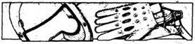
248.
Túl lassan reagálsz, és a hegyes öklelőrúd pont a vezetőülésnél fúródik a kocsidba. Azonnal végez veled. Kalandod véget ér a sivatagi éjszakában.
249.
Az összetört motorhoz mész. Egyik kezedben fegyveredet tartod, a másikban kötszert viszel. Az egyik férfi halott, a másikban még van valami élet. Odébb rúgod a pisztolyát, és megnézed, meg tudod-e menteni. Kinyitja a szemét, és gonoszul elmosolyodik. - Dagi Jack és a fiúk még elkapnak ezért. - Ezzel hátrahanyatlik, és nem mozdul többé. Nem tudsz segíteni rajta. Megnézed a motorkerékpárt, s egy zárt csomagtartót látsz a hátsó kerék fölé erősítve. Ha ki akarod nyitni, lapozz a 206-ra. Ha nem vesztegeted ezzel az időt, s rögtön elindulsz kelet felé, lapozz a 163-ra.
250.
A férfi észreveszi, hogy zsebre akarod dugni a kezed, és rád szól, hogy csak emeld a fejed fölé. Ahogy a fák alatt ünneplő csoporthoz közeledtek, rádöbbensz, hogy ez az utolsó alkalom, hogy meglépj. Úgy teszel, mintha megbotlanál, aztán hirtelen kirúgsz oldalra. Dobj egy kockával. Ha 1 és 4 között dobtál, lapozz a 192-re. Ha 5-öt vagy 6-ot, lapozz a 347-re.
251.
Az iránytűdön is ellenőrződ az irányt, egyenesen kelet felé mész. Az Interceptor rázkódik a köves talajon, aztán hirtelen hangos durranást hallasz. A kocsit alig tudod kormányozni, durrdefekted van. Amikor megállsz, látod, hogy a gumi úgy megsérült, hogy nem lehet megragasztani. Ha van tartalék kereked, lapozz a 223-ra. Ha nincs, lapozz a 343-ra.
252.
Benyitsz a házba, és belépsz. A hallból két ajtó nyílik egymással szemben. Ha a bal oldali ajtót akarod kinyitni, lapozz a 185-re. Ha a jobb oldali ajtót választod, lapozz a 72-re.
253.
Kinyitod a kormányülés felőli ajtót, és benyúlsz a kesztyűtartóba. Hirtelen csörgő hangot hallasz, és ijedten látod, hogy egy csörgőkígyó fészkét zavartad meg. A kígyó azonnal támad, és halálos mérgével beléd mar. Ha még van egy csomag gyógyszered a mentőládádban, lapozz a 2-re. Ha már mindent elhasználtál, lapozz a 357-re.

254.
Szép vidék tárul eléd a reggeli fényben, de veszélyes is. Nem tudod, hogy az utat nem aknázták-e alá az útonállók, akik ki akarják rabolni az erre járókat. Dobj egy kockával. Ha 1-et, 2-t vagy 3-at dobsz, lapozz a 129-re. Ha 4-et, 5-öt vagy 6-ot, lapozz a 101-re.
255.
Nincs más választásod, körbe kell kúsznod a kerítés mentén a bejáratig. Tedd próbára Szerencséd! Ha szerencséd van, lapozz a 339-re. Ha nincs szerencséd, lapozz a 145-re.
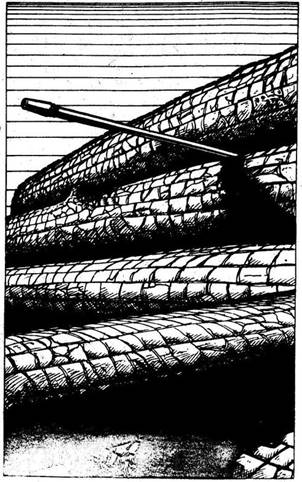
256.
Bár erősen vérzel, eléred kocsidat. Beugrasz a vezetőülésre, és feltépsz egy gyógyszercsomagot. Gyorsan ellátod magad, kiveszed a golyót, és vékony műbőrrel vonod be a sebet, majd bekötöd, Jókedved némileg visszatér, amikor végre beletaposol a gázba és elhagyod a várost. Lapozz a 34-re.

257.
Az utat egy farönkökből emelt barikád torlaszolja el. A rönkök közül egy fegyver hosszú csöve mered feléd. Úgy döntesz, hogy megállsz, és rábeszéled a fegyver gazdáját, hogy engedjen át. De hiába kéred, a válasz rövid. - Fordulj vissza. Ez itt autómentes zóna. Figyelmeztettünk. - Ha megfogadod a tanácsát, és visszafordulsz nyugat felé, lapozz a 337-re. Ha tilalmát elengeded a füled mellett, és továbbmész kelet felé, lapozz a 9-re.
258.
Kirohansz a melléképületből, és a kocsiból felkapod a mentőládát. Egy csomag gyógyszert használsz fel, de az most nem hozza helyre életerődet, mindössze megakadályozza, hogy a méreg továbbterjedjen a szervezetedben. Nem akarod az éjszaka hátralevő részét a színben tölteni, el kell határoznod, mitévő legyél. Ha a kocsiban akarsz aludni, lapozz a 297-re. Ha továbbindulsz, és egész éjszaka vezetsz, lapozz a 144-re.
259.
Messze távolban hegyek körvonalait látod. Ahogy a hegyek lábához érsz, egy alagutat pillantasz meg magad előtt, melynek bejáratát egy busz torlaszolja el. Kiszállsz, és a buszhoz mész, hogy lásd, nem tudod-e beindítani és odébb mozdítani. A vezetőülés ajtaja hirtelen kipattan, és egy álarcos férfi ugrik ki az útra, rád szegezett pisztollyal. - Ha át akarsz menni ezen az alagúton, vagy 200 hitel sarcot fizetsz, vagy pisztolypárbajt vívsz velem - mondja. Ha kifizeted a sarcot, lapozz a 369-re. Ha vállalod a pisztolypárbajt, lapozz a 291-re.

260.
Rákiáltasz a férfira, hogy takarodjon az autódtól, de az tovább énekel, ha jól hallod, valami olyat, hogy a földet meg kell tisztítani az autóktól s a dekadens múlt minden maradványától. Ügyes sem vet rád, s a meggyújtott gyufát az Interceptorra hajítja, amely rögtön lángba borul. Haragod hasztalan, az őrült véget vetett küldetésednek.

261.
A tető jobb oldala teljesen bezúzódik, de a vezetőülés oldala épen marad. A hegyomlás nem zárja el teljesen az utat, és mihelyt a sziklák nem hullanak, tovább mész. Lapozz a 351-re.

262.
A segélykiáltás irányába mész. Egy kunyhóból jön, amely a vegyesbolt mögött van. Megkérdezed, ki van odabenn, s megörülsz a válasznak. Sinclair az, Új Remény tanácsának vezetője. Körülnézel, és egy vasrúddal levered a lakatot az ajtóról. Sinclair hamarosan szabad. 1 Szerencse pontot nyersz ezzel. Sinclair elmeséli neked az Új Remény elleni ostromot és elrablását. Megkér, tudasd rádión Új Reménnyel, hogy motorral elindult hazafelé. Két motor parkol a vegyesbolt előtt, s ő egy öreg Harley Davidsont választ. Megköszöni segítséged, s búcsút intve eldübörög észak felé. Mit teszel?
Átkutatod a vegyesboltot? Lapozz a 112-re.
Átkutatod a legközelebbi
házat? Lapozz a 252-re.
Elindulsz dél felé? Lapozz a 353-ra.
263.
A golyó a szíveden talál, és azonnal megöl. Kalandod hirtelen véget ér.
264.
A feszítővassal kezedben kocsiról kocsira ugrálva visszarohansz az Interceptorhoz. Szerencsére ott van, ahol hagytad, és hamarosan újra úton vagy dél felé. Lapozz a 149-re.
265.
Nem állsz meg, hátha Leonardi barátai a közelben vannak. Jó tempóban haladsz vagy tizenöt kilométert, míg egy pótkocsis teherautóhoz nem érsz, amely, úgy tűnik, nem régóta áll ott. Ha meg akarsz állni, hogy átvizsgáld, lapozz a 104-re. Ha inkább megállás nélkül továbbmész, lapozz a 118-ra.
266.
Míg azon kínlódsz, hogy a megrongált kocsit egyensúlyban tartsd, a Ford elzúg melletted. Mivel nem használhatod előretüzelő fegyvereidet, úgy döntesz, hogy ökleléssel próbálkozol. Lapozz a 139-re.
267.
Leparkolsz az Interceptorral, és visszamész a mentőautóhoz. A vezetőülés üres, bár úgy látod, hogy a kocsit nemrég használták. Ha ki akarod nyitni a hátsó ajtót, hogy megnézd van-e valami odabent, lapozz a 195-re. Ha inkább visszaülsz az Interceptorba, és elindulsz kelet felé, lapozz a 22-re.

268.
Szerencsére a motorban nem tett kárt a robbanás, és azonnal beindul. Sietve elhajtasz, örülsz, hogy túlélted a kalandot. Lapozz a 303-ra.
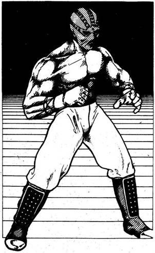
269.
Kiáltasz, hogy elfogadod a kihívást, és kiállsz az Állattal, de azzal a feltétellel, hogy elengednek, ha győzöl. Az Állat beleegyezik, két férfi és két nő mászik ki a furgonból. Puskáikkal az Interceptor oldalán verve az ütemet kiabálják vezetőjük nevét. - Ál-lat. Ál-lat. Ál-lat. - A furgon hátsó ajtaja lassan kinyílik, és egy jól megtermett, félmeztelen férfi lép ki. Arcát bőrére simuló maszk fedi, ökölbe szorított kezére szögekkel kivert szíj van tekerve, és látod, hogy térdig érő csizmájának orra vasalt. Dühös bikaként fújtatva száll ki a kocsiból. Elindulsz felé, s Amber bátorítóan kiált utánad.
Állat ÜGYESSÉG 11 ÉLETERŐ 16
A Kézitusa szabályai szerint halálig folytasd a küzdelmet. Az Állat szöges ökölvédője miatt találatai 2 pontot érnek. Ha van bokszered, az ugyancsak 2 pontot ér. Ha nincs, találatonként (minden fordulóban) 1 pontot vonhatsz le az Állat Életerejéből. Ha megnyered a harcot, lapozz a 355-re.
270.
Hátratolatsz, hogy elég lendületet vehess. Izmaid megfeszülnek, és érzed, hogy az adrenalin szétáramlik ereidben. A motor feldübörög, ahogy a gázra lépsz aztán hirtelen kiengeded a kuplungot,
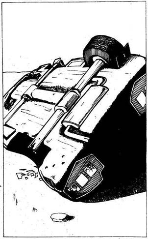
és a híd felé száguldasz. 120 kilométeres sebességgel érkezel a hídra, és mire első kerekeid a levegőbe érnek, már 130-cal mész. Dobj két kockával. Ha az összeg akkora vagy kisebb, mint Ügyességed, lapozz a 70-re. Ha az összeg nagyobb Ügyességednél, lapozz a 231-re.
271.
A vidék vörösesbarnává változik, ahogy beljebb hajtasz a sivatagba. Az út nyílegyenesen délnek vezet, és elhagyott kocsik sem zavarják a haladást. Ám menet közben valami ismerős járművet pillantasz meg. Egy felborult Interceptor az, amely megperdülve legurult az útról, miután vezetője meghalt a volánnál. Ha meg akarsz állni, hogy megnézd, találsz-e rajta valami használható alkatrészt, lapozz a 166-ra. Ha elmész mellette, lapozz a 13-ra.

272.
Az út magasra nőtt fű közt vezet, és nincsenek rajta akadályok. Megnézed a kilométerórádon, hogy mennyit jöttél eddig, s közben látod, hogy a benzined fogytán van. Ha utad során szert tettél egy teli kanna benzinre, lapozz a 323-ra. Ha nem, akkor lapozz a 364-re.
273.
Miközben a tetovált férfi előtt mész, zsebedbe nyúlsz a bokszerért. Tedd próbára Szerencséd! Ha szerencséd van, lapozz a 170-re. Ha nincs szerencséd, lapozz a 250-re.
274.
A férfi hirtelen kibukkan az ajtó mögül, és puskájával a kezében feléd tart. Komoran néz, majd így szól: - Oda igyekszem. Egy hete biciklizek, amióta a furgonomat megtámadták, és a feleségemet meg a fiamat megölték. Megálltam itt, hogy valami élelmiszert keressek a szupermarketben, amikor azok a nyavalyás kutyák megtámadtak. Egyet lelőttem, a másik elszaladt. Johnsonnak hívnak. Örülök, hogy találkoztunk. - Leteszi a puskát, és kezet nyújt. Megtudod tőle, hogy építész, és afelől érdeklődik, milyen messze van még innen Új Remény, és vajon befogadják-e ott. Megnyugtatod, hogy mindössze tizenöt kilométernyire, és jó esélyei vannak, mert a városnak szüksége van képzett emberekre. Aztán elmondod neki, mi járatban vagy, s ő figyelmeztet, hogy ne álljál meg Joe Garázsánál, amely nyolc kilométerre van innen. - Nincs benzinjük, és kirabolnak mindenkit, aki megáll náluk. - Megköszönöd a tanácsot, és jó szerencsét kívánva visszamész az Interceptorhoz. Erős motorja életre kel, mikor elfordítod az indítókulcsot, majd elrobogsz. Lapozz a 34-re.
275.
Szédülni kezdesz, és iszonyatosan remegsz. Meg kell állnod, mert nem tudsz tovább vezetni. Rémülten látod, hogy daganatok nőttek a testeden. A
patkány harapása megfertőzött a járvánnyal. Tudod, hogy a járvány mennyire fertőző, és azt is tudod, mit kell tenned. Otthagyod a benzinszállítót, és gyalog indulsz el a pusztába, meghalni. Reszkető kézzel írt üzenetben tudatod balsorsod honfitársaiddal. Egy éven belül szobrot állítanak tiszteletedre.
276.
Lehúzódsz az útról, és egy sövény mögé állítod az Interceptort. Amikor leállítod a motort, akkor veszed csak észre, milyen csend van odakint, és eltűnődsz azon, vajon hallotta-e valaki, hogy megálltál. Úgy döntesz, hogy csak akkor alszol el, amikor már teljesen besötétedik. Sokáig eszel, majd amikor végül megbizonyosodsz róla, hogy senki sem jár erre, kinyújtózkodsz és elalszol. Kora reggel kipihenten ébredsz. 2 Életerő pontot nyersz. Nem vesztegeted az időt, rögtön útra kelsz, és visszatérve az útra délnek hajtasz. Lapozz a 128-ra.

277.
A csomagtartó teteje kipattan, és egy golyóbiztos mellényt találsz benne. 1 Szerencse és 1 Ügyesség pontot nyersz. Dzsekid alá fölveszed a mellényt, és visszaszállva kocsidba elhajtasz. Lapozz a 49-re.
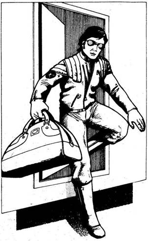
278.
Miközben visszahajtasz a kereszteződéshez, fura hangot hallasz hátulról, és egyre nehezebben kormányzol. Amikor végül megállsz és kiszállsz, rögtön látod, mi okozza a bajt. Az egyik kerék leeresztett. 1 Szerencse pontot veszítesz. A csomagtartóból előveszed az U-Fix ragasztót. Hamarosan továbbmész nyugat felé, és elérkezel egy kereszteződéshez, ahol balra fordulsz. Lapozz a 311-re.
279.
Egy eltévedt golyó az oldaladba fúródik, miközben átrohansz a nyílt terepen. Dobj egy kockával, az eredményt vond le Életerődből. Ha életben maradsz, lapozz a 40-re.
280.
Legnagyobb meglepetésedre és bosszúságodra a páncélkocsi vezetője ura marad a kocsinak, megfogja a csúszást, és keresztülhajt az olajfolton. Úgy döntesz, hogy azonnal bevágsz egy kézifékes fordulót, és szemtől szembe fordulsz az ellenséggel. Lapozz a 77-re.
281.
Revolverrel a kézben ugrasz ki az Interceptorból, és óvatosan felmászol a vasúti töltésen. Amikor felérsz, a híd felé nézve meglátod támadódat. Épp valami zsákot vesz ki egy elhagyott lakókocsiból, majd motorra pattanva elszáguld. Ha be akarsz nézni a lakókocsiba, lapozz az 58-ra. Ha inkább visszasietsz az Interceptorhoz, hogy folytasd utad, lapozz a 150-re.
282.
A motor összevissza kanyarogva követ, és nehéz eltalálni.
Oldalkocsis motor TŰZERŐ 2 PÁNCÉLZAT 8
Ha győzöl ebben az országúti ütközetben, lapozz a 143-ra.
283.
Az egyik motoros odalép, és fölveszi a kulcsot meg a revolvert. Aztán felszólít, hogy állj föl és fordulj meg. Amikor engedelmeskedsz, pisztolya agyával keményen tarkón vág, és elveszted az eszméletedet. Lapozz a 100-ra.
284.
A három autó egyre közelebb ér, és az elöl haladó Toyota tüzet nyit rád a fényszóróiba szerelt géppuskából.
Toyota TŰZERŐ 9 PÁNCÉLZAT 15
Jaguár E-típus TŰZERŐ 10 PÁNCÉLZAT 12
Commodore TŰZERŐ 8 PÁNCÉLZAT 13
Egyenként küzdesz meg a három kocsival. Ha győzöl, lapozz a 265-re.

285.
Ráveted magad a férfira, és lerántod a földre. Esés közben kiütöd a meggyújtott gyufát a kezéből, és megmented a kocsidat. 1 Szerencse pontot nyersz. A férfi átkozódva elszalad. Hagyod futni, fontosabb, hogy megvédd az Interceptort az esetleges többi mániákustól. Nem vesztegeted tovább az időt, és elhajtasz dél felé. Lapozz a 254-re.

286.
Mikor megfordulsz s újra a motel felé indulsz, gyenge fényt pillantasz meg az egyik emeleti ablakban. Lövöldözésed megzavart valakit. Nem akarsz megkockáztatni még egy összetűzést, és gyorsan visszamész a benzinszállítóhoz. Továbbhajtasz néhány mérföldet a legközelebbi megfelelő parkolóhelyig, és a kabinban alszol el. Lapozz a 218-ra.

287.
A Ford vezetője feszülten figyel, és ahogy előzni próbálsz, az Interceptor felé fordítja kocsiját. Első öklelőrúdja az Interceptor oldalába fúródik, és lyukat üt az ajtón. 2 Páncélzat pontot veszítesz. Nem veszed le lábad a gázról, és sikerül a Ford elé vágnod. Lapozz a 340-re.

288.
- Oké, én hiszek neked, de mondjál többet is - szól, és hosszan, keményen néz rád a férfi. Elmagyarázod, hogy nem te ölted meg a feleségét és a gyerekét, és csak azért hazudtad, hogy útonálló vagy, hogy titokban tartsd Új Remény hollétét. Elvégre nem tudhattad, nem akarja-e megtámadni. A férfi hirtelen izgatottá válik. - Új Remény, ezt mondtad? Épp oda tartok. Azóta biciklizek erre, amióta megtámadtak. Itt is csak azért álltam meg, hogy valami konzervet keressek ebben a szupermarketben, amikor azok a nyavalyás Kutyák megtámadtak. Az egyiket lelőttem, a másik elszaladt. Johnsonnak hívnak, és sajnálom, hogy ilyen hangon fenyegettelek meg, de manapság már senkiben sem bízhat meg az ember. - Mosolyogva kezet ráztok, és megtudod tőle, hogy építész a szakmája. Megkérdi tőled, milyen messze van még
Új remény, és hogy vajon befogadják-e. Azt feleled, hogy mindössze tizenöt kilométer, és jó esélyei vannak, mert a városnak szüksége van tanult emberekre. Azt is elmondod, mi járatban vagy, és figyelmeztet, hogy ne álljál meg Joe Garázsánál, amely nyolc kilométerre van. - Nincs benzinjük, és kifosztanak mindenkit, aki megáll náluk - mondja. Megköszönöd a tanácsot, jó szerencsét kívánsz, és visszamész az Interceptorhoz. Erős motorja rögtön életre kel, ahogy elfordítod az indítókulcsot, és ismét elszáguldasz. Lapozz a 34-re.
289.
Veszettül tüzelsz a közeledő járműre, de nem látsz mást, csak a vakító fényeket, s lövedékeid célt tévesztenek. Nem így az Állatéi. Könnyű célpont vagy, és nem tudsz hogyan védekezni támadásával szemben. Megbuktál küldetéseden.
290.
A kerekek porfelhőben pörögnek, ahogy a gumi megkapaszkodik az út felszínén. Tökéletesen megfogod a csúszást, és már gyorsítasz is a páncélkocsi felé, amely géppuskájából golyókat köpködve közeledik.
Páncélkocsi TŰZERŐ 9 PÁNCÉLZAT 20
Ha győzöl, lapozz a 106-ra.

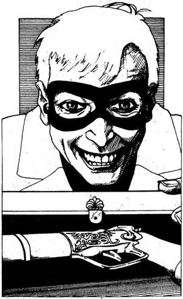
291.
Az álarcos egy mahagónidobozt vesz ki a busz vezetőfülkéjéből. Két gyönyörű régi párbajpisztolyt van benne. - Válassz - mondja, feléd nyújtva a fegyvereket. Elveszed az egyiket, és kezeden egyensúlyozva próbálgatod a súlyát. Aztán egymásnak háttal felálltok, és a férfi elmondja a szabályokat. Tíz lépést tesztek meg, aztán megfordultok és tüzeltek. Nagy lélegzetet veszel, és hangosan számolod a lépéseket. Amikor megfordulsz, látod, hogy az álarcos szemben áll veled, és pisztolyával célba vett. Mindketten egyszerre lőttök.
Párbajhős ÜGYESSÉG 9 ÉLETERŐ 9
Egy fordulót játssz le a Tűzharc szabálya szerint. Ha túlélted a párbajt, lapozz a 208-ra.
292.
Ha maradt még rakétád, lapozz a 31-re. Ha már mind elhasználtad, lapozz a 173-ra.
293.
Ha van bokszered, lapozz az 56-ra. Ha nincs, akkor lapozz a 125-re.
294.
Száguldás közben megpillantod a fehér házat, amely körül meg kell fordulnod. A fékre taposol, és élesen balra rántod a kormányt. Néhány métert hátrálsz a felkavart porban, aztán egyesbe vágod a sebességváltót, és tüzelsz vissza a célvonal felé. A Ford egy ugyanolyan gyors U fordulóval hamarosan újra mögötted van. Melléd ér, a vezetője
rögtön feléd rántja a kormányt, hogy oldalra szorítsa az Interceptort. Látszik rajta, hogy ökleléssel akarja eldönteni a versenyt.
Sárga Ford TŰZERŐ 8 PÁNCÉLZAT 16
Egy sikeres öklelés 2 ponttal gyengíti a másik kocsi Páncélzatát. Ha négy fordulót túlélsz, lapozz a 334-re.
295.
A kocsi porfelhőt kavarva megáll. Visszapillantó tükrödben látod, hogy a két motoros fedezékbe rohan. Aztán az akna felrobban, s egy kereket tönkretesz, de a kocsiban mindössze tompa puffanás hallatszik. 2 Páncélzat pontot veszítesz. A por még le sem ülepedik, amikor a motorosok már tüzet is nyitnak a járművükre szerelt géppuskával. Mozdulatlan célpont vagy. Dobj egy kockával, az eredményt vond le Páncélzat pontjaidból. El kell hagynod a kocsit, hogy elbánhass velük. Meghúzod az Interceptor géppuskájának ravaszát, és a lövések fedezékében kivetődsz az autóból. Egy közeli bokor mögé kúszol, s revolveredet előhúzva azon gondolkodsz, vajon észrevettek-e. Tedd próbára Szerencséd! Ha szerencséd van, lapozz a 122-re. Ha nincs, lapozz a 329-re.
296.
A férfi pisztolyt ragad, s közvetlen közelről rád lő. Ha golyóálló mellényt viselsz, lapozz a 174-re. Ha nem, lapozz a 263-ra.
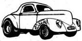
297.
Másnap reggel elzsibbadt karral ébredsz, de jobban érzed magad. 2 Életerő pontot nyersz. Ha át akarod kutatni a kávézót, lapozz a 26-ra. Ha inkább azonnal továbbmész, lapozz a 254-re.
298.
Úgy nyolcvan kilométeren keresztül a sivatag szélén haladsz, majd az út egy T alakú elágazáshoz ér. Úgy határozol, hogy itt balra fordulsz, s a sivatagon át mész délnek, San Anglo irányába. Lapozz a 271-re.
299.
A légnyomás ellenére mindössze felületi sebet ejt rajtad egy szilánk. 2 Életerő pontot veszítesz. Odébb gurulva az Interceptor mögött keresel fedezéket, ahogy támadóid tüzelni kezdenek. Nincs más hátra, mint pisztolyoddal törni utat.
Első motoros ÜGYESSÉG 7 ÉLETERŐ 13
Második motoros ÜGYESSÉG 5 ÉLETERŐ 14
Mindkét motoros külön-külön lő rád mindegyik fordulóban ebben a tűzharcban, s el kell döntened, melyikükre lősz. A másik ellen a szokásos módon veted be Tűzerődet, de nem sebesíted meg még akkor sem, ha Támadóerőd nagyobb, mint az övé. Vedd úgy, hogy golyója célt tévesztett. Ha győzöl, lapozz a 97-re, de vonjál le Ügyességedből végleg 1 pontot, ha egynél többször eltaláltak.

300.
A tetovált férfi útbaigazításait követve a kiégett házig hajtasz a földúton. Négy tuningolt kocsi parkol itt, mindegyiken fegyverek garmadája. Egy kis csoport ácsorog vadul vitatkozva, ügyet sem vetve rád, bár nézték, ahogy beállsz. Odamész hozzájuk, és a versenyről kérdezed őket. Egy alacsony, sebhelyes arcú fickó elmosolyodik. - Kezdő vagy, mi? - kérdi. - Még soha nem voltál a Blitz-versenyen? Nagyon egyszerű. Bármelyikünket kihívhatod versenyre. 200 hitelt kell leperkálnod, de ha nyersz, egy nagy kanna benzint kapsz. - Hangos nevetésben tör ki, és a többiek csatlakoznak hozzá. Ha ki akarod hívni a Versenyre, lapozz a 240-re. Ha csak nézed a Versenyt, lapozz a 224-re.
301.
Harminc kilométer múlva az út hirtelen megszűnik. Útépítő gépek állnak tétlenül, a sivatagi meleg és a szél kénye-kedvére, életnek nem látod jelét. Az út építését nem fejezték be a katasztrófa előtt. 1 Szerencse pontot veszítesz. Balra köves síkság tárul eléd. Jobbra nem látsz mást csak homokot. Ha balra akarsz menni a köves síkságon, lapozz a 251-re. Ha inkább továbbmész délnek a homokon át, lapozz a 237-re.
302.
Kinyitod az ajtót, és kiszállsz az Interceptorból. Ahogy elindulsz a lány felé, egy borotvált fejű férfi ugrik ki a szivattyú mögül. - Kukucs - kiáltja, kezében egy feszítővasat lóbálva. - Add csak ide a kulcsodat és a hiteleidet. Csak semmi okoskodás, ha nem akarod, hogy bajod essen. - Ha át akarod adni neki a kulcsot és a pénzt, lapozz a 209-re. Ha inkább késeddel megküzdesz vele, lapozz a 48-ra.
303.
Ahogy az idő múlik, egyre melegebb lesz, s miközben délnek haladsz, látod, hogy megváltozik a növényzet. A dús mezők cserjés vidéknek adják át helyüket, és nemsokára már sivatagban haladsz. Néhány kilométerrel odébb egy nagy elágazást találsz. Ha balra akarsz fordulni kelet felé, lapozz a 140-re. Ha inkább tovább haladsz déli irányban, lapozz a 189-re.
304.
Ahogy lelassítasz, hirtelen egy férfi ugrik ki az út menti árokból, s mintha egy palackot akarna az Interceptorhoz vágni. A palack nyakába dugott lángoló rongyból látod, hogy egy benzinbomba az. Szerencsére csak az egyik kereked lyukadt ki, és így sikerül gyorsítanod, megmenekülni a bombától. Azonban egyre nehezebb a kormányzás, s végül meg kell állnod, hogy szemügyre vedd a lapos kereket. Tedd próbára Szerencséd! Ha szerencséd van, lapozz a 238-ra. Ha nincs, lapozz a 370-re.
305.
A helikopter a földre zuhan, és azonnal lángra lobban. Semmit sem tehetsz utasaiért. Gázt adsz, és elindulsz nyugat felé. Lapozz a 216-ra.
306.
Egy üres kannát teszel a teherautó benzintankja alá, és a műanyag tömlővel összekapcsolod őket. Megszívod a csövet, hogy a benzin folyni kezdjen, aztán kiengeded a teherautó összes benzinjét, majdnem teletöltve kannádat. 1 Szerencse pontot nyersz. A kannát visszateszed az Interceptorba, és továbbhaladsz dél felé. Lapozz a 118-ra.
307.
Odamész a motorhoz, s az egyiken egy zárt csomagtartót pillantasz meg. Ha ki akarod nyitni, lapozz a 206-ra. Ha nem vesztegeted az időt, inkább rögtön kereket cserélsz az Interceptoron, lapozz a 346-ra.
308.
Jó lövés volt, a farkas azonnal holtan terül el. A társa a lövéstől megrettenve elszalad, s eltűnik az árnyékban. Lapozz a 286-ra.
309.
A motor után nézel, ahogy az egyre távolodik, végül eltűnik szem elől. Vársz néhány percet, aztán újra elindulsz kelet felé. Nemsokára egy útjelző táblához érsz, amely egy keskeny földútra mutat, egy Sziklaváros nevű hely felé. Ha délnek fordulsz Sziklavárosba, lapozz a 157-re. Ha inkább továbbmész kelet felé, lapozz a 45-re.

310.
Megállítod a kocsit, és a kanna tartalmát beöntöd a tankba. Tudod, hogy nincs elég üzemanyagod San Anglóig, és azon tűnődsz, hol fogsz ebben a sivatagban benzinhez jutni. Nyomaszt a gondolat, s másra sem tudsz gondolni, miközben újra elindulsz. Lapozz a 115-re.
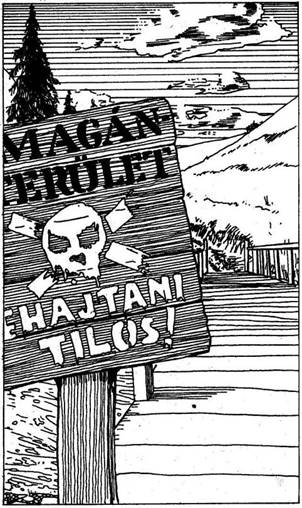
311.
Néhány kilométerrel odébb egy durván ácsolt kis fahídhoz érsz, amely keskeny folyón vezet át. A híd oldalán egy tábla figyelmeztet, hogy tilos felhajtani. Ha nem törődve a figyelmeztetéssel továbbmész, lapozz a 229-re. Ha megfordulsz és visszahajtasz az utolsó elágazásig, lapozz a 124-re.
312.
Megnyomod a műszerfalon a gombot, s azonnal vasszögek szóródnak mögötted az útra. Tükrödben figyeled, ahogy a páncélautó feléjük közeledik. Tedd próbára a Szerencsédet! Ha Szerencséd van, lapozz a 181-re. Ha nincs Szerencséd, lapozz a 41-re.
313.
Az egyik kereket meg tudod ragasztani, de a másik túl rossz állapotban van. Ha van tartalék kereked, lapozz a 19-re. Ha nincs, mert már mind felhasználtad, lapozz a 336-ra.

314.
Csikorogva megállsz, és hátramenetbe váltasz. Sziklák és kövek zuhannak előtted az útra, de egyik sem találja el kocsidat. 1 Szerencse pontot nyersz. Szerencsére a hegyomlás nem zárja el teljesen az utat, és hamarosan tovább hajthatsz. Lapozz a 351-re.
315.
Valaki egy páncélököllel lőtt rád, és telibe talált. Dobj két kockával, és az összeget vond le az Interceptor Páncélzatából. Ha túlélted a lövést, lapozz az 53-ra.
316.
A Pusztulás Kutyái csendben a furgonhoz viszik az Állatot, és a kocsi hátuljába teszik. Mire a két kocsi eltávolodik egymástól, a nap keleten már fölkelni készül, s hamarosan meleg, vörös fényben fürdesz. Hirtelen bizakodni kezdesz, hogy küldetésed sikerülni fog. Délnek hajtasz, magad mögött hagyva a Pusztulás Kutyáit. Lapozz a 90-re.
317.
Lehajtasz az útról, s köves földön, bozótosban manőverezel, amikor hirtelen két veszedelmes kinézetű bőrruhás fickó ugrik ki egy bokor mögül. Az egyik pisztolyából tüzel rád, hogy fedezze társát, aki mágneses aknát tapaszt az Interceptor hátsó sárvédőjére. 1 Szerencse pontot veszítesz. Mire észbe kapsz és a géppuska ravasza felé nyúlsz, már fedezékbe ugrottak. Kétségbeesetten gondolkodsz, mit tegyél.
Hajts tovább? Lapozz a 17-re.
Állítsd meg az autót és ugorj
ki? Lapozz a 212-re.
Állítsd meg az autót, de ne szállj
ki? Lapozz a 295-re.
318.
Megnyomod a gombot a műszerfalon, és a tartály az útra zuhan. A tükörben figyeled, ahogy a sebesen közeledő Ford előtt pattog az úton. Tedd próbára Szerencséd! Ha szerencséd van, lapozz a 63-ra. Ha nincs szerencséd, lapozz a 98-ra.
319.
Amber szőlőcukrot és szintetikus energiatablettákat ad. 4 Életerő pontot nyersz. Lapozz a 32-re.
320.
Az akna ártalmatlanul robban fel jó húsz méterrel mögötted, de tudod, hogy hamarosan újra tüzet nyitnak rád. Ráadásul egy golyó kilyukasztotta az egyik első kerekedet, és meg kell állnod. Ha van még rakétád, lapozz a 31-re. Ha már mind felhasználtad, lapozz a 173-ra.
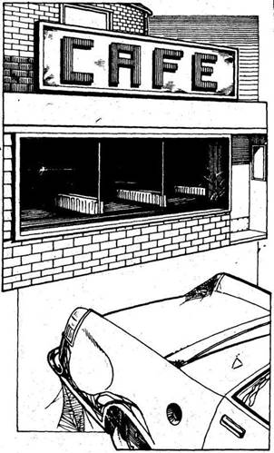
321.
Egy régi, út menti kávézó az első épület, amely utadba esik. Parkolójában kocsik állnak, de úgy látod, már rég nem használták őket. Az épület mögé hajtasz, hogy elrejtsd az Interceptort. Miután kiszállsz és körülnézve meggyőződsz, hogy senki nincs itt, eldöntöd, hol alszol. Ha ágyban akarsz aludni a kávézó feletti szobában, lapozz az 55-re. Ha kinn a faházikóban alszol, lapozz a 332-re.
322.
A Jaguár E-típus előtted száguld át a célvonalon, és hat éljenző ember fogadja. Leonardi keresztbe állítja kocsiját az úton, és int, hogy állj meg. Ha engedelmeskedsz, lapozz a 378-ra. Ha inkább megkockáztatod, hogy kikerülöd az E-típust, hogy egérutat nyerj, lapozz a 162-re.

323.
Megállsz, és kiszállva a tankba öntöd a tartalék üzemanyagot. Nem sok volt benne, és rádöbbensz, hogy üzemanyagot kell találnod, ha el akarod érni San Anglót. Esteledik, mire elindulsz, és a jobb oldali ablakon keresztül látod, ahogy lenyugszik a nap. Hamarosan sötét lesz, és el kell döntened, mit tegyél. Ha lehajtva az útról az Interceptorban töltöd az éjszakát, lapozz a 276-ra. Ha inkább egész éjjel vezetsz, lapozz a 42-re.
324.
Gyorstüzelő géppuskád nem téveszti el a célt. A motorkerékpár lerepül az útról, s egy fának ütközik. De vezetője nem adja olcsón az életét. Nyílpuskájának nyila az első kerekedbe fúródik, és a benzinszállító irányíthatatlanná válik. Hiába birkózol a kormánykerékkel, a hatalmas jármű megbillen, majd oldalra dől és szikrázva, csikorogva megáll. A kabinba zárva rádöbbensz, hogy megbuktál küldetéseden, sőt örülhetsz, ha megmenekülsz, hiszen a másik motoros feléd közeledik…
325.
A homokba hajítod revolvered a mentőautó mögé. Egy pár bőrcsizmát pillantasz meg, majd egy kezet, amely fölveszi a fegyvert. Óvatosan kimászol, és felemelt kézzel megállsz. Ápolatlan férfi áll előtted, reád szegezve fegyverét. Bajuszos szájából cigaretta lóg ki, a nap elől vörös napellenző védi arcát. Hidegen pillant rád, s utasít, hogy hajítsd oda az Interceptor kulcsát. Ha engedelmeskedsz, lapozz a 366-ra. Ha késedért nyúlsz, hogy belevágd, lapozz a 82-re.
326.
Teljes erőből rohantok, közben hátra-hátrapillantotok a hegy körül keringő kocsira, amely a nyomaitokat keresi. Még messze vagytok
az Interceptortól, amikor nyomotokra bukkannak, és a jármű utánatok ered. Dühös hang harsan a sivatagban egy hangszórón keresztül. - Megállj. Senki sem menekülhet az Állat elől. - Újra és Újra felharsan a szöveg, egyre hangosabban, ahogy a jármű közelebb ér. Nincs remény rá, hogy elérjétek az Interceptort, ezért rákiáltasz Amberra, hogy hasaljon le, és tüzeljen a járműre. Ezt teszed te is, a fényszórókra célozva. Dobj két kockával. Ha az összeg akkora vagy kisebb, mint Ügyességed, lapozz a 113-ra. Ha nagyobb Ügyességednél, lapozz a 289-re.
327.
Úgy döntesz, hogy csak reggel mész tovább. Korán ébredsz, de a rövid alvás is jót tett. 1 Életerő pontot nyersz. Miután kiszabadítod az Interceptort a roncsból, ismét elindulsz dél felé. Lapozz a 254-re.
328.
Kiöntöd az autód mögé, és kárörvendően figyeled, hogy két üldöződ összeütközik. Már csak egyikük követ, a Toyota, s a fényszóróiba szerelt géppuskából tüzet nyit rád.
Toyota TŰZERŐ 9 PÁNCÉLZAT 15
Ha győzöl, lapozz a 265-re.
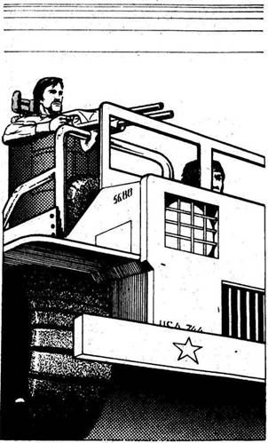
329.
Az egyik motoros észrevette, hogy kiugrottál. - Dobd el a fegyvert és a kulcsaidat - kiált feléd. - Csak a kocsidat akarjuk. - Ha engedelmeskedsz, lapozz a 283-ra. Ha a harcot választod, lapozz a 6-ra.
330.
Megfordítod az Interceptort, és visszahajtasz a fakapuhoz, ahol az őr géppisztolyával feléd bök. - Meggondoltad magad mi? - Lassan bólintasz, s vigyázol, hogy ne mutasd haragodat. Kinyitja a kaput, s emlékeztet, merre kell menned. Lapozz a 300-ra.
331.
Amber hirtelen figyelmeztetően felkiált, és egy dzsipre mutat, amely gyorsan közeledik felétek. - A Pusztulás Kutyái. Ezek támadtak meg engem is - mondja. A dzsipen kétcsövű géppuska van egy toronyra szerelve, és kezelője tüzet nyit, mihelyt lőtávolba ér.
Dzsip TŰZERŐ 9 PÁNCÉLZAT 14
Ha győzöl, lapozz a 7-re.
332.
A faházban meleg és sötét van. Alvóhelyet keresel a farönkök között, amelyeket valamikor tüzelőnek gyűjthettek össze a kávézó számára. Amikor sötétedik, eszel valamit, és a nap eseményein rágódsz. Holnap talán eléred San Anglót. Amikor teljesen besötétedik, nyugovóra térsz. Tedd próbára Szerencséd! Ha szerencséd van, lapozz a 16-ra. Ha nincs, lapozz a 84-re.

333.
Dobj két kockával. Ha az összeg akkora vagy kisebb, mint Ügyességed, lapozz az 57-re. Ha az összeg nagyobb Ügyességednél, lapozz a 86-ra.
334.
Körülbelül egy kilométerre lehet a célvonal, de még fej-fej mellett haladtok a Forddal. Az út összeszűkül előttetek, s egy keskeny kőhídban folytatódik. Ha továbbra is a padlóig nyomod a gázpedált, lapozz a 35-re. Ha lassítasz, és magad elé engeded a Fordot, lapozz a 239-re.
335.
Késő éjszaka van, és zseblámpával kell világítanod, hogy lásd hová lépsz. Tedd próbára Szerencséd! Ha szerencséd van, lapozz az 5-re. Ha nincs szerencséd, lapozz a 365-re.
336.
A foszlányokra szakadt kerékkel nem mehetsz tovább. Komoran nézel körül az elhagyott környéken, de tudod, hogy senki sem jön segítségedre. Meg kell próbálnod gyalog visszajutni Új Reménybe. Megbuktál küldetéseden.
337.
Hamarosan visszaérsz a hegyek lábánál levő elágazáshoz, ahonnan továbbmész nyugat felé. Lapozz a 211-re.
338.
Ahogy a farmházhoz közeledsz, újabb vakító villanást látsz, páncélököllel az emeleti ablakból lőnek. Élesen balra rántod a kormányt, hogy elkerüld a robbanást. Tedd próbára Szerencséd! Ha szerencséd van, lapozz a 320-ra. Ha nincs, lapozz a 105-re.
339.
Sikerül észrevétlen a kapuhoz kúsznotok, és belopóznotok a parkolóba. Amber kocsitól kocsiig megy, és kis bombákat tapaszt a motorblokkokra. Amikor végzett, int, hogy mehettek. Leosontok a hegyről, és amikor már nem láthatnak titeket, rohanni kezdtek. Hirtelen megkezdődnek a robbanások, hetet számoltok. - Az egyik bomba nem működik - lihegi Amber futás közben. Majd halljátok, hogy egy motor beindul, és hátranézve két fénykört láttok, amely gyorsan távolodik az égő roncsok lángjaitól. A Pusztulás Kutyái üldözni akarják támadóikat. Ha jelenlegi Életerőd 10 vagy annál több, lapozz a 107-re. Ha nem éri el a 10-et, lapozz a 326-ra.
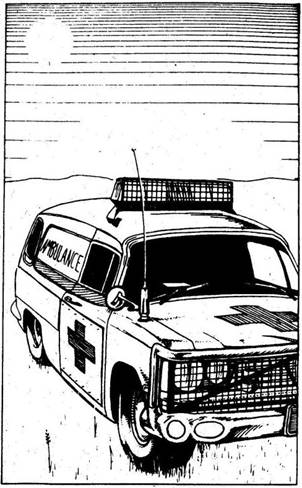
340.
Úgy véled, itt az ideje, hogy bevess valami fegyvert üldözőid ellen, s a műszerfalon levő gombokra nézel. Ha egy doboz vasszöget akarsz az útra szórni, lapozz a 318-ra. Ha inkább olajat akarsz az útra önteni, lapozz a 213-ra.
341.
Egy mentőautót látsz az út szélén. Nincs a közelében senki. Ha meg akarsz állni, hogy átnézed, lapozz a 267-re. Ha inkább tovább mész kelet felé, lapozz a 22-re.
342.
Nem sikerül időben kormányoznod, és az egyik kőpillérnek ütközöl. Dobj egy kockával, és az eredményt vond le kocsid Páncélzatából. Ha túléled a karambolt, lapozz a 79-re.
343.
Hiába átkozod balszerencséd, nem tudsz mit tenni a tönkrement kerékkel. Lehetetlen továbbhajtani a sivatagban, és tudod, hogy sorsára kell hagynod az Interceptort. Némi szerencsével visszajuthatsz Új Reménybe, és talán megpróbálhatsz máskor eljutni San Anglóba.
344.
Visszatérsz az útra, elhaladsz a mentőautó mellett, keresztezed az autópályát, amelyről nemrégiben lehajtottál. Viszonylag kevés akadály van az úton, és gyorsan haladhatsz. De rövid ideig tart jó dolgod. Az út egy folyóhoz ér, amelyen függőhíd vezet át, de az nincs teljesen leeresztve, és nem
tudsz áthajtani rajta. Úgy gondolod, hogy ha 130-cal mész neki, a lendület átviheti az Interceptort a nyíláson. Elhatározod, hogy megkockáztatod. Lapozz a 270-re.
345.
Az útonálló bosszúságára a nyílvessző elzúg a fejed mellett. Felugrasz a tetőre, és nekirontva a férfinak birokra kelsz vele, mielőtt újratölthetné nyílpuskáját. Dobj egy kockával, az eredményt add Ügyességedhez. Ismét dobj egy kockával, és az eredményt add az Útonálló 7 Ügyességéhez. Ha a te pontjaid száma annyi vagy több, mint amennyi az Útonállónak van, lapozz a 74-re. Ha kevesebb pontod van, mint neki, lapozz a 226-ra.
346.
Szerencsére a kerékagy nem sérült meg, és gyorsan fölteszed a tartalék kereket. Hamarosan újra úton vagy, de keserűen csóválod a fejed, milyen őrült világban kell élned. Kisvártatva egy újabb útjelzőhöz érsz, amely egy Sziklaváros nevű helységhez vezet, ahová egy keskeny földúton jutsz el. Ha délnek akarsz fordulni Sziklaváros felé, lapozz a 157-re. Ha inkább továbbmész kelet felé, lapozz a 45-re.
347.
A tetovált férfi lassan kapcsol, és karaterúgásod teljes erővel a gyomrán találja. Összeesik, és ezt kihasználva a kocsidhoz rohansz. Ahogy az ajtót nyitod, a férfi eléggé magához tér, hogy utánad eresszen egy sorozatot. Tedd próbára Szerencséd! Ha szerencséd van, lapozz a 204-re. Ha nincs szerencséd, lapozz a 65-re.
348.
Úgy döntesz, hogy nem mész tovább éjszaka, inkább alszol egy keveset hajnal előtt. Ösztönösen felébredsz, ahogy a nap első sugarai bearanyozzák a láthatárt. 1 Életerő pontot nyersz. Szemügyre veszed, milyen károkat szenvedett az Interceptor, s látod, hogy bár nehéz kormányozni, de használható maradt. Míg visszaülsz és továbbindulsz dél felé, nem bánod, hogy manapság nem ellenőrzi a rendőrség a kocsik műszaki állapotát. Lapozz a 128-ra.
349.
Sikerül kiütnöd az őrt, és miközben elesik, elkapod, remélve, a társai nem veszik észre, mi történik. Összekötözöd a saját övével, és a hegyoldalban hagyod. Nemsokára nyilván keresni kezdik, ezért sietned kell a kerítés felé. Lapozz a 198-ra.
350.
Lövésed nem talál, és a kutya rád veti magát. Gyorsan kirántod a késed, hogy azzal védd magad.
Vadkutya ÜGYESSÉG 7 ÉLETERŐ 5
A Kézitusa szabályai szerint küzdd végig ezt a harcot (halálig). Késed és a kutya harapása egyaránt 2 Életerő pont levonását jelenti. Lapozz a 89-re.

351.
Végül kiérsz a kanyonból, és az út, ameddig csak ellátsz, nyílegyenesen vezet. Az iránytűre pillantva megállapítod, hogy ismét dél felé haladsz. Azonban mindössze néhány kilométert teszel meg, amikor meg kell állnod, mert két kocsi torlaszolja el az utat. Két fegyveres, bőr egyenruhás férfi lép melléd, és közlik, hogy csak akkor hajthatsz tovább, ha sebességi versenyben legyőződ legjobb vezetőjüket. Ha veszítesz, vissza kell fordulnod. Egy kocsi húz az Interceptor mellé. Azonnal megismered a XX. század klasszikus kocsiját, a Jaguár E-típust. Egy rövid, fekete hajú, sovány férfi ül a volán mögött. Önbizalommal néz rád. - Hello. Leonardi vagyok. Valamikor a Metsben baseballoztam, most autóversenyzek. Kár, hogy egy ilyen vén szemétládát vezetsz, de azért sok szerencsét. - A két kocsi, amely elállta az utat, odébb húzódik, és látod, hogy további autók sorakoznak az út mentén. Egy férfi tűnik fel egy zászlóval, hogy indítsa a versenyt. Hirtelen leereszti a zászlót, és mire észbe kapsz, mi is történik, a verseny megkezdődik. A Jaguár valamivel gyorsabban indul. Ha feltuningoltattad a motort, lapozz a 210-re. Ha nem, akkor lapozz a 358-ra.
352.
A kerék porfelhőt kavarva forog, ahogy a gumi próbál megkapaszkodni az út felszínén. De túlkormányoztad, és a kocsi egy sekély árokba fordul. A páncélautó egyre közeledik, és már látod is a géppuskatűz villanásait.
Páncélautó TŰZERŐ 9 PÁNCÉLZAT 20
Tűzerődet 2-vel csökkenti ebben az Autós Csatában kocsid mozdíthatatlansága. Ha győzöl, lapozz a 33-ra.
353.
A földút jobbra-balra kanyarog a nyílt vidéken, míg végül egy jó úthoz nem érsz. Jobbra majd balra nézel, de egyik irányban sem látsz járművet vagy az élet bármi jelét. Ha keletnek akarsz fordulni, lapozz a 61-re. Ha nyugat felé, lapozz a 371-re.

354.
Az Interceptor balra csapódik, de sikerül megfognod. Gyorsan kell gondolkodnod, mit tegyél. Gyorsítasz, hogy elhúzzál? Lapozz a 183-ra. Vagy erősen fékezel, hogy a Ford elmehessen melletted? Lapozz a 27-re.
355.
A Pusztulás Kutyáinak rögtön elmúlik a jókedve, amikor az Állat fekve marad a homokban. Összenéznek, láthatóan nem tudják eldönteni, hagyjanak-e elmenni, vagy szegjék meg ígéretüket. Tedd próbára a Szerencséd! Ha szerencséd van, lapozz a 316-ra. Ha nincs, lapozz a 184-re.
356.
Mozdulatlanul fekszel a mentőautó alatt, s közeledő lépteket hallasz. Az oldalad nagyon fáj, és keményen markolod a revolvert. Hirtelen egy férfi hangját hallod. - Hé, te hülye - mondja -, azt hiszed, nem tudok követni egy vérnyomot? Hajítsd ki a fegyvered, és mássz ki a mentőautó alól felemelt kézzel. - Ha engedelmeskedsz, lapozz a 325-re. Ha kigurulva a mentőautó alól rálősz a fickóra, lapozz a 12-re.
357.
A pusztaságban, több száz kilométerre minden orvosi segítségtől, semmi sincs, ami megállíthatná a halálos mérget. Hamarosan elgyengülsz, ahhoz sincs erőd, hogy vezess. A méreg nemsokára végez veled, kalandod véget ér.
358.
Felváltva dobj egy-egy kockát az E-típusnak és az Interceptornak. Addig tedd ezt, amíg az egyik autó el nem éri a 24-et, s ezzel átszáguld a célvonalon. Ha győzöl, lapozz az 54-re. Ha elveszted a versenyt, lapozz a 322-re.
359.
Egy öreg Ford csomagtartójában találsz valamit, amitől csaknem indiántáncot jársz örömödben. Egy teli kanna benzin az. 1 Szerencse pontot nyersz. A feszítővassal és a teli kannával a kocsik tetején át visszamész az Interceptorhoz. Szerencsére ott van, ahol hagytad, és hamarosan ismét úton vagy dél felé. Lapozz a 149-re.
360.
Amber lecsap, de ismét nem talál. Te viszont kiszabadítod a kezedet, miközben a homokban gurultok. Az Állat tovább szorít, míg te torkon akarok ragadni. 2 Életerő pontot vesztesz. Amber lecsap a csavarkulccsal, ezúttal - talál. Lapozz a 376-ra.
361.
Megnyomod a gombot, és a tartályból vékony olajréteg kerül az útra. A motorkerékpár nagy sebességgel az olajra fut, majd lerepül az útról. Szaltózva landol a homokban, és ahogy továbbhajtasz, eltűnik szemed elől. Lapozz a 96-ra.
362.
A mellékút egyenes, és jól haladhatsz, mivel nemigen akadályoznak elhagyott kocsik. De egy óra vezetés után egy T alakú elágazáshoz érsz. Ha balra akarsz fordulni, lapozz a 92-re. Ha jobbra, akkor lapozz a 153-ra.

363.
A férfi túl lassan reagál, s nem tud lebukni az ütés elől. Eszméletlenül zuhan a földre. Teljes sebességgel futsz az Interceptor felé, hogy elmenekülj, mielőtt barátai rájönnének, mi történt. Legnagyobb megkönnyebbülésedre az Interceptor pöccintésre indul, és eltüzelsz az ócska úton a főút felé, ahol csikorgó kerékkel délnek kanyarodsz. Lapozz a 207-re.

364.
Néhány kilométer után a motor kihagy, majd teljesen leáll. Félelmed beigazolódott, kifogyott az üzemanyagod. Sem épületet nem látsz, sem életnek bármi jelét. Tudomásul kell venned, hogy küldetésed véget ért. Megpróbálsz gyalog visszaérni Új Reménybe, hogy egyszer talán ismét megkísérelj eljutni San Anglóba.
365.
Ahogy a motel felé mész, hirtelen vonyítást hallasz magad mögül. Mikor megfordulsz, két világító szempár villan zseblámpád fényében. Két farkas készül rád támadni. Gyorsan pisztolyt rántasz, és rálősz az elsőre. Dobj két kockával. Ha az összeg akkora vagy kisebb, mint Ügyességed, lapozz a 308-ra. Ha nagyobb Ügyességednél, lapozz a 120-ra.
366.
A férfi utasít, hogy fordulj meg, s amikor engedelmeskedsz neki, tarkón vág a markolattal. Eszméletlenül esel össze, s mire magadhoz térsz, a férfi már eltűnt az Interceptorral. Megbuktál a küldetéseden.
367.
A férfi hirtelen észrevesz, s riasztja társait. - Hé - kiálltja -, figyeljetek csak! Látogatónk érkezett. - Fegyverével célba véve utasít, hogy állj föl, és emeld kezed a magasba. Másodperceken belül a Pusztulás Kutyái nevű banda tíz tagja vesz körül. Sorsod a sivatagi törvényenkívüliek kezében van. Küldetésednek soha nem fogsz eleget tenni.
368.
Miközben kihúzod oldaladból a tőrt, támadód egy kis revolvert ránt elő a hóna alól. Le kell győznöd.
Bandita ÜGYESSÉG 7 ÉLETERŐ 11
A Tűzharc szabályai szerint játszd le ezt a küzdelmet, de adj 1 pontot Ügyességedhez, mert a
kocsiajtó mögött fedezékben vagy. Ha győzöl, lapozz a 64-re, de vonj le végleg 1 pontot Ügyességedből, ha egynél többször eltaláltak.
369.
Az álarcos elveszi a 200 hitelt, és odébb hajt a busszal, hogy bemehess az alagútba. Hamarosan átérsz a túloldalra, és egy kanyargós útra érsz, amely egy mély kanyon alján vezet. Lapozz a 130-ra.
370.
Ezt a kereket már nem lehet megjavítani. Ha van nálad tartalék, lapozz a 19-re. Ha már mind felhasználtad, lapozz a 336-ra.
371.
Hosszú ideig haladsz nyugat felé, s mindössze egyetlen leágazás mellett mész el, az is egy észak felé vezető keskeny út. Végül egy T alakú elágazáshoz érsz, ahol balra fordulhatsz nyugat felé, amerre San Anglo fekszik. Lapozz a 225-re.

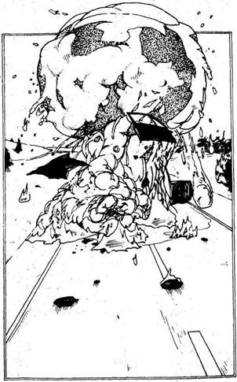
372.
Előrenyúlsz, és a műszerfaladon megnyomod a rakétavető gombját. Az Interceptor megrázkódik, ahogy a rakéta útnak indul, nyomban ezután fülsiketítő robbanás és vakító villanás jelzi a találatot. Amikor a füst eloszlik, szabad az út előtted. Hirtelen motorbúgást hallasz, és két bőrruhás, fegyveres motoros tűnik fel a bokrok mögül, és száguld el az útakadályon ütött lyukon keresztül. Az utas megfordul a nyeregben, és figyelmeztető lövést ad le, miközben a motor tovaszáguld. Ha utánuk akarsz menni, lapozz a 95-re. Ha futni hagyod őket, lapozz a 309-re.
373.
A motor oldalkocsijával egyenesen ráfut a vasszögekre, és két kereke is kidurran. A jármű lerepül az útról, és felbukfencezik a homokban. Másodpercek múlva már nem is látod. Lapozz a 96-ra.
374.
Előhúzod késed, és készenlétben várod a kutyát.
Vadkutya ÜGYESSÉG 7 ÉLETERŐ 5
A Kézitusa szabályai szerint játszd ezt a küzdelmet egészen halálig. Késed és a kutya harapása egyaránt 2 Életerő pont levonását jelenti. Ha győzöl, lapozz a 89-re.
375.
Úgy döntesz, hogy elveszed a törvényenkívüli Magnumját, mert veszélyesebb fegyver, mint a te revolvered. Ezentúl 1 plusz Ügyesség pontod van minden tűzharcban. Elfordítod az indítókulcsot, és a motor életre kel. Hamarosan ismét dél felé száguldasz. Lapozz a 303-ra.
376.
Az Állat elveszti az eszméletét, de nem kockáztathatsz, és megkötözöd a kezét. Mire útnak indulsz, a nap már felkelt, s meleg vörös fényben fürdesz. Hirtelen bizakodni kezdesz, hogy küldetésed sikerrel jár. Délnek hajtasz, az átkozódó Állatot magára hagyva. Szabadítsa ki bandája maradéka, ha akarja. Lapozz a 90-re.
377.
Jobbra-balra cikázol, hogy nehezebb célpontot nyújtsál, ugyanakkor viszonzod a tüzet géppuskádból. Dobj két kockával. Ha az összeg akkora vagy kisebb, mint Ügyességed, lapozz a 338-ra. Ha az összeg nagyobb Ügyességednél, lapozz a 191-re.
378.
Leonardi kiszáll a Jaguárból, s az Interceptorhoz megy. - Jól vezetsz - mondja -, de még gyakorolnod kell. Fordulj vissza, és irány a kanyon. - Úgy teszel, és hamarosan ismét a kanyargós úton haladsz. Elmész a földcsuszamlás mellett, és behajtasz az alagútba. Legnagyobb meglepetésedre napvilágot látsz az alagút végében, és zavartalanul áthaladsz. A busz, amely korábban elállta a kijáratot, egy kilométerrel lejjebb parkol. Gond nélkül
elmész mellette, és továbbhajtasz a T alakú elágazásig. Balra fordulsz dél felé a sivatagi úton. Lapozz a 301-re.
379.
Már csak néhány méterre vagytok a hídtól, amikor a Ford vezetőjének inába száll a bátorsága, és keményen fékezve engedi, hogy előretörj. Kötélidegeidtől felbosszantva kétségbeesetten előzni próbál, mielőtt áthaladnál a célvonalon. A Ford hihetetlenül jól gyorsul tuningolt motorjával, és hamarosan fej-fej mellett haladtok. Már csak kétszáz méterre van a cél, és rájössz, hogy a Ford egy hajszállal előbb fog célba érkezni. Valahogy elé kell vágnod. Balra rántod a kormányt? Lapozz a 20-ra. Vagy jobbra? Lapozz a 80-ra.
380.
Továbbhajtasz Új Remény felé, és megkönnyebbülten látod, hogy a kapu nyitva. Polgártársaid százai bukkannak fel üdvözlésedre, és hősnek kijáró fogadtatásban részesülsz. A benzinnek nagy hasznát veszitek jövőtök építésében. Ha egy kis lépéssel is, de hozzájárultatok a civilizáció újjáteremtéséhez. Ha még Sinclairt is sikerült megmentened, küldetésed teljes sikerrel járt.